<!doctype html>
<html lang="en">
<head>
  <meta charset="utf-8">
  <meta name="viewport" content="width=device-width, initial-scale=1">
  <title>arxiv digest — 2026-08-05</title>
  <style>
:root {
  --bg: #ffffff;
  --fg: #1f2328;
  --muted: #59636e;
  --border: #d0d7de;
  --card: #f6f8fa;
  --link: #0969da;
}
body {
  max-width: 980px;
  margin: 0 auto;
  padding: 2rem 1rem 5rem;
  font-family: -apple-system, BlinkMacSystemFont, "Segoe UI", Helvetica, Arial, sans-serif;
  line-height: 1.55;
  color: var(--fg);
  background: var(--bg);
}
a { color: var(--link); }
img { max-width: 100%; height: auto; }
pre, code { background: var(--card); border-radius: 6px; }
pre { padding: 1rem; overflow-x: auto; }
blockquote { border-left: 4px solid var(--border); padding-left: 1rem; color: var(--muted); }
details { margin: 0.6rem 0; }
summary { cursor: pointer; font-weight: 600; }
.paper-figures-scroll {
  display: flex;
  gap: 1rem;
  overflow-x: auto;
  overscroll-behavior-x: contain;
  padding: 0.75rem 0.25rem 1rem;
  margin: 1rem 0 1.25rem;
  border-top: 1px solid var(--border);
  border-bottom: 1px solid var(--border);
  scroll-snap-type: x proximity;
}
.paper-figure-card {
  flex: 0 0 min(260px, 72vw);
  scroll-snap-align: start;
  background: var(--card);
  border: 1px solid var(--border);
  border-radius: 12px;
  padding: 0.55rem;
}
.paper-figure-card img {
  display: block;
  width: 100%;
  max-height: 240px;
  object-fit: contain;
  background: white;
  border-radius: 8px;
}
.paper-figure-caption {
  display: block;
  margin-top: 0.5rem;
  color: var(--muted);
  font-size: 0.85rem;
}
.figure-strip-hint {
  color: var(--muted);
  font-size: 0.9rem;
  margin-bottom: -0.3rem;
}
</style>
  <!-- MathJax: renders $...$ inline math and $$...$$ display math, plus
       \(...\) and \[...\]. Loaded from the official CDN; works offline
       once cached. Configured to skip code/pre blocks so arxiv IDs that
       look like dollar amounts don't get mangled. -->
  <script>
    window.MathJax = {
      tex: {
        inlineMath: [['$', '$'], ['\\(', '\\)']],
        displayMath: [['$$', '$$'], ['\\[', '\\]']],
        processEscapes: true,
        processEnvironments: true
      },
      options: {
        skipHtmlTags: ['script', 'noscript', 'style', 'textarea', 'pre', 'code'],
        ignoreHtmlClass: 'tex2jax_ignore',
        processHtmlClass: 'tex2jax_process'
      }
    };
  </script>
  <script id="MathJax-script" async
    src="https://cdn.jsdelivr.net/npm/mathjax@3/es5/tex-chtml.js"></script>
</head>
<body>
<header style="background-color: #333; color: white; padding: 15px; margin-bottom: 20px;">
  <h1 style="margin: 0; font-size: 24px;">
    <a href="https://ochelpan.github.io/arXiv_clean/" style="color: white; text-decoration: none;">Main</a>
  </h1>
</header>

<h1>Daily arXiv Report</h1>

<hr>
<p>
<a href="index.html">← Index</a>
 · <a href="papers_01.html">← Previous</a> · <a href="papers_03.html">Next →</a>
</p>
<hr>

<h2>Papers 21–40</h2>
<p><a id="paper-2608.02245"></a></p>
<h3 id="quantum-computer-based-simulation-of-stark-many-body-localization-in-a-1d-fermi-hubbard-model"><a href="http://arxiv.org/abs/2608.02245v1">Quantum computer-based simulation of Stark many-body localization in a 1D Fermi-Hubbard model</a></h3>
<p><strong>Authors:</strong> Abdul Kalam, Prasenjit Deb, Akitada Sakurai, Tapan Mishra, V. S. Prasannaa, B. P. Das<br>
<strong>Type:</strong> both · <strong>Category:</strong> disordered systems and neural networks · <strong>PDF:</strong> <a href="https://arxiv.org/pdf/2608.02245v1">https://arxiv.org/pdf/2608.02245v1</a><br>
<strong>Analysis basis:</strong> full PDF text, analyzed in chunks
<strong>Topic relevance:</strong> 🔥 <code>QC/QI experiment</code> <strong>4/5</strong> · 🔥 <code>scars &amp; prethermalization</code> <strong>4/5</strong> · <code>methods for driven-dissipative</code> <strong>3/5</strong> · <code>non-equilibrium dynamics</code> <strong>3/5</strong> · <code>non-equilibrium universality</code> <strong>2/5</strong> · <code>Keldysh / 2PI / non-Gaussian methods</code> <strong>1/5</strong> · <code>analog quantum simulation</code> <strong>1/5</strong> · <code>driven-dissipative phase transition</code> <strong>1/5</strong> · <code>entanglement &amp; information structure</code> <strong>1/5</strong></p>
<div class="figure-strip-hint">↔ Scroll figures horizontally</div>
<div class="paper-figures-scroll">
<figure class="paper-figure-card">
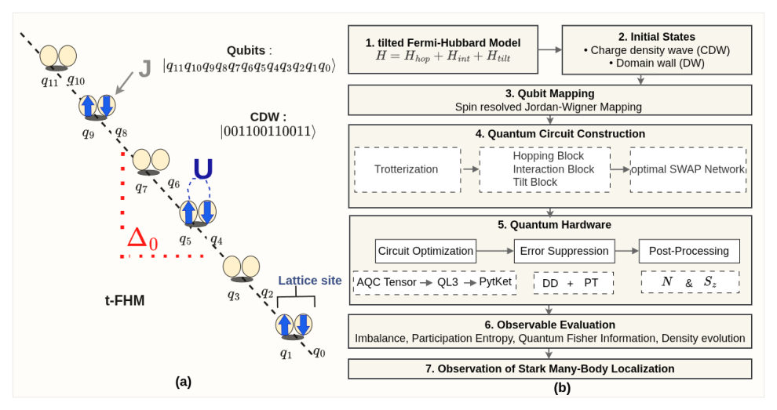
<figcaption class="paper-figure-caption"><b>Fig 1.</b> Figure 1. (a) Schematic representation of the tilted Fermi–Hubbard model considered in this work. The hopping amplitude J, on-site interaction U, and linear Stark potential of strength ∆0 define the disorder-free lattice model. A representative charge-density-wave (CDW) initial state and the qubit ordering used in the simulations are also shown. (b) Workflow of the quantum-simulation protocol. The tilted Fermi–Hubbard model is mapped to qubits using a spin-resolved Jordan–Wigner transformation, evolved using a Trotterized SWAP-network circuit, and optimized through AQC-Tensor, Qiskit level-3, and pytket routines before hardware execution. Error suppression is performed using dynamical...</figcaption>
</figure>
<figure class="paper-figure-card">
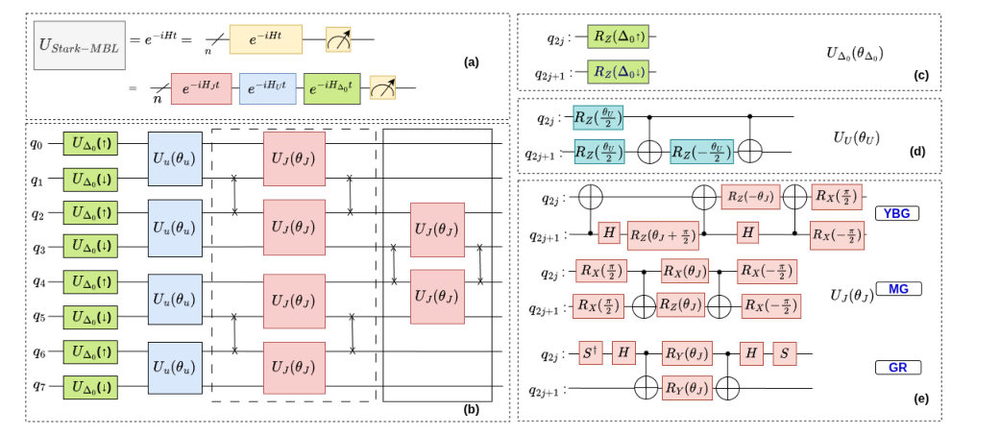
<figcaption class="paper-figure-caption"><b>Fig 2.</b> Figure 2. First-order Trotter implementation of the t-FHM. (a) The time-evolution operator is decomposed into hopping, interaction, and Stark-potential contributions. (b) Single Trotter-step circuit employing a constant-depth SWAP-network ar- chitecture, where the Stark-potential, interaction, and hopping blocks are applied sequentially. The SWAP network enables efficient implementation of the next-nearest-neighbor hopping interactions arising from the spin-resolved Jordan–Wigner map- ping using only nearest-neighbor connectivity. (c) Three alternative realizations of the hopping unitary UJ(θJ) considered in this work: Yang–Baxter gate (YBG), Matchgate (MG), and Fermionic Givens Rotation...</figcaption>
</figure>
<figure class="paper-figure-card">
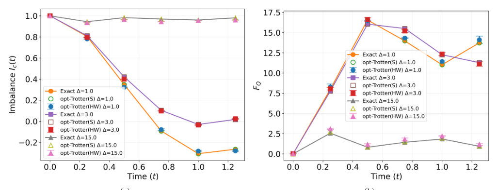
<figcaption class="paper-figure-caption"><b>Fig 3.</b> Figure 3. Comparison of exact diagonalization (Exact), optimized Trotter simulation [opt-Trotter(S)], and optimized Trotter hardware [opt-Trotter(HW)] results for a L = 6 t-FHM chain initialized in the CDW state. The optimized Trotter circuits are obtained after the circuit-compression and transpilation workflow described in Sec. III. Results are shown for three representative Stark-field strengths: ∆0 = 1 (weak tilt), ∆0 = 3 (intermediate tilt), and ∆0 = 15 (strong tilt). (a) Charge imbalance Ic(t), and (b) Quantum Fisher Information FQ(t). For weak and intermediate tilts, the imbalance rapidly decays while FQ and SPE 2 increase, indicating delocalized dynamics. In contrast, the...</figcaption>
</figure>
<figure class="paper-figure-card">
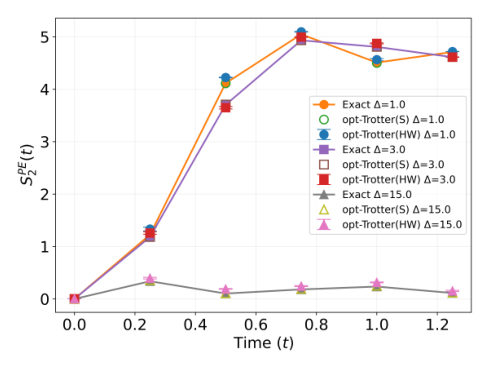
<figcaption class="paper-figure-caption"><b>Fig 4.</b> Figure 4. Time evolution of the second-order participation entropy SPE 2 (t) the CDW initial state. Results are com- pared among exact diagonalization (Exact), optimized noise- less Trotter simulation [opt-Trotter(S)], and optimized Trot- ter hardware execution [opt-Trotter(HW)] for three Stark- field strengths, ∆0 = 1, 3, and 15.</figcaption>
</figure>
<figure class="paper-figure-card">
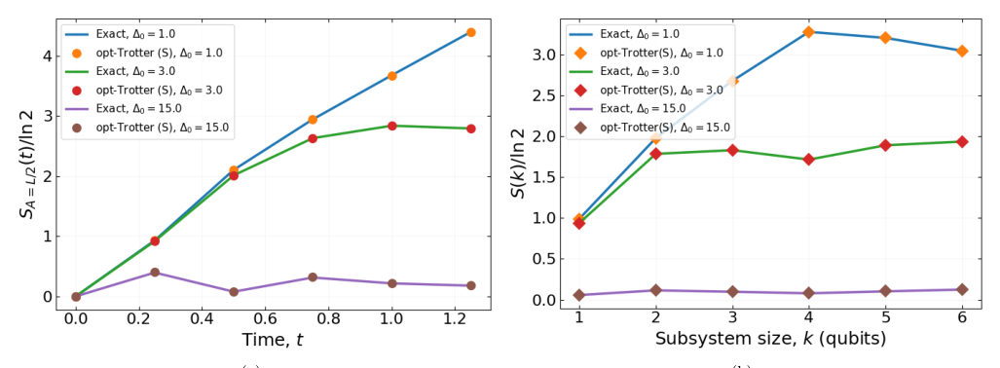
<figcaption class="paper-figure-caption"><b>Fig 5.</b> Figure 5. von Neumann entanglement entropy for the CDW initial state obtained from exact diagonalization and optimized first-order Trotter simulation. (a) Half-chain entanglement entropy SA=L/2(t) as a function of time for three Stark-field strengths, ∆0 = 1, ∆0 = 3, and ∆0 = 15. Weak and intermediate Stark fields exhibit substantial entanglement growth, whereas strong Stark fields strongly suppress the buildup of entanglement. (b) Subsystem entanglement entropy S(k) evaluated at the final evolution time t = 1.25 as a function of subsystem size k. For weak tilts, the entropy increases rapidly with subsystem size, reflecting extensive information spreading. In contrast, the strong-tilt...</figcaption>
</figure>
</div>

<p><strong>Summary.</strong> This work simulates Stark Many-Body Localization in the 1D Fermi-Hubbard model using an IBM superconducting quantum computer. By optimizing circuit depth and gate count, the authors successfully observed a transition from thermalizing to strongly localized behavior when applying a strong external electric field. This demonstrates the feasibility of simulating complex non-equilibrium condensed matter phenomena on current noisy quantum hardware.</p>
<p><strong>Why it may be interesting.</strong> It bridges fundamental condensed matter physics (MBL) with cutting-edge quantum hardware implementation challenges, providing a concrete roadmap for simulating complex many-body dynamics on NISQ devices.</p>
<details>
<summary>Detailed structure</summary>
<p><strong>Main problem.</strong> The study investigates Many-body localization (MBL), specifically Stark MBL, which describes non-ergodic behavior in isolated quantum many-body systems.</p>
<p><strong>Main result.</strong> The authors demonstrated a crossover from thermalizing to strongly localized dynamics by simulating the t-FHM on a quantum computer using a strong external electric field (large tilt).</p>
<p><strong>Method.</strong> Hamiltonian simulation was performed on an IBM superconducting qubit quantum computer using Trotterized circuits, optimized via tensor network methods.</p>
<p><strong>Model / system.</strong> The system is modeled by the one-dimensional Fermi-Hubbard model subjected to a linear Stark potential (tilted Fermi-Hubbard model). The simulation requires mapping the fermionic system onto qubits using a spin-resolved Jordan-Wigner transformation.</p>
<p><strong>Key observables.</strong> Charge Imbalance ($I_c(t)$), particle number in the initially occupied half ($N_{	ext{half}}(t)$), and density evolution.</p>
<p><strong>Important parameters / regimes.</strong> Stark field strength ($\Delta_0$): weak, intermediate, and strong regimes are analyzed. The simulation is limited by NISQ device noise.</p>
<p><strong>Assumptions / limitations.</strong> The use of the first-order Trotter approximation for time evolution introduces systematic errors; hardware limitations restrict access to very long evolution times.</p>
<p><strong>Figures summary.</strong> Figures illustrate the model setup (t-FHM), the quantum circuit workflow involving SWAP networks and optimization routines, and show how observables like $N_{	ext{half}}(t)$ change across different Stark field strengths.</p>
<p><strong>Paper structure.</strong> The paper introduces MBL theory, details the t-FHM Hamiltonian, outlines the qubit mapping and Trotterized simulation protocol, presents results showing the crossover between thermalizing and localized regimes based on the applied tilt strength, and concludes with benchmarking against exact methods.</p>
</details>
<details>
<summary>Abstract</summary>
<p>Many-body localization (MBL) is a dynamical phenomenon that describes the non-ergodicity of isolated quantum many-body systems. In contrast to thermalization, this phenomenon leads to a long-lived memory of initial states of local systems and slow growth of entanglement. In this work, we study Stark MBL in a 12-qubit correlated fermionic system described by the one-dimensional Fermi-Hubbard model using Hamiltonian simulation on an IBM superconducting qubit quantum computer. To enable such a computation on current-day noisy hardware, we combine a series of compilation steps, including the use of the spin-resolved Jordan-Wigner transformation, employing SWAP networks, and integrating a tensor-network-based quantum circuit optimization routine on top of a standard circuit optimization pipeline. As a result, there is approximately an 88$\%$ and 87$\%$ reduction in two-qubit gate count and circuit depth, respectively. Through such simulations of the real-time dynamics using Trotterized quantum circuits, we exhibit a crossover from thermalizing dynamics of the system at a weak tilt of the field to a strongly localized behavior at large tilt with short evolution times. We also benchmark our obtained results with respect to those from exact simulations.</p>
</details>
<p><sub><a href="#top">↑ back to top</a></sub></p>

<p><a id="paper-2608.02054"></a></p>
<h3 id="scaled-caldeira-leggett-dynamics-deterministic-trajectories-and-the-classical-limit"><a href="http://arxiv.org/abs/2608.02054v1">Scaled Caldeira-Leggett Dynamics: Deterministic Trajectories and the Classical Limit</a></h3>
<p><strong>Authors:</strong> S. V. Mousavi, S. Miret-Artés<br>
<strong>Type:</strong> theory · <strong>Category:</strong> statistical mechanics · <strong>PDF:</strong> <a href="https://arxiv.org/pdf/2608.02054v1">https://arxiv.org/pdf/2608.02054v1</a><br>
<strong>Analysis basis:</strong> full PDF text, analyzed in chunks
<strong>Topic relevance:</strong> 🔥 <code>methods for driven-dissipative</code> <strong>4/5</strong> · 🔥 <code>quantum measurements</code> <strong>4/5</strong> · <code>Keldysh / 2PI / non-Gaussian methods</code> <strong>3/5</strong> · <code>measurement-induced transitions</code> <strong>3/5</strong> · <code>non-equilibrium dynamics</code> <strong>2/5</strong> · <code>correlated / nonlocal dissipation</code> <strong>1/5</strong> · <code>driven-dissipative phase transition</code> <strong>1/5</strong> · <code>non-equilibrium universality</code> <strong>1/5</strong></p>
<div class="figure-strip-hint">↔ Scroll figures horizontally</div>
<div class="paper-figures-scroll">
<figure class="paper-figure-card">
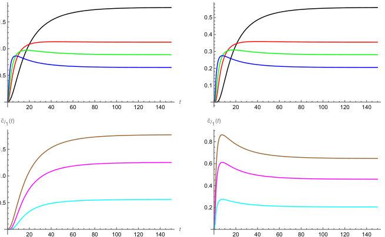
<figcaption class="paper-figure-caption"><b>Fig 1.</b> FIG. 1: Quantum coherence given by (39). Top panels: quantum regime (left) and transition regime with ϵ = 0.1 (right) for different temperatures: T = 2 (black), T = 5 (red), T = 8 (green), and T = 15 (blue). Bottom panels: coherence for fixed temperatures T = 2 (left) and T = 15 (right), for different regimes ϵ = 1 (brown), ϵ = 0.5 (magenta), and ϵ = 0.1 (cyan). Other parameters are ¯h = m = kB = 1, x0 = −5, p0 = 2, σ0 = 1, and γ = 0.01.</figcaption>
</figure>
<figure class="paper-figure-card">
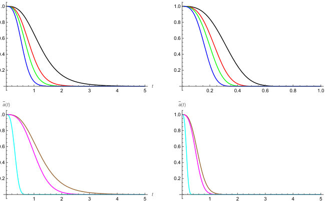
<figcaption class="paper-figure-caption"><b>Fig 2.</b> FIG. 2: Coherence attenuation coefficient ˜a(t) given by (50) versus time. Top panels show the quantum regime (left) and the transition regime with ϵ = 0.01 (right) for different temperatures: T = 2 (black), T = 5 (red), T = 8 (green), and T = 15 (blue). Bottom panels show a(t) for fixed temperatures T = 2 (left) and T = 15 (right) for different regimes: ϵ = 1 (brown), ϵ = 0.5 (magenta), and ϵ = 0.01 (cyan). Other parameters are fixed as ¯h = m = kB = 1, x0 = −5, p0 = 2, σ0 = 1, and γ = 0.01. These plots highlight how both temperature and quantumness influence the rate of coherence loss.</figcaption>
</figure>
<figure class="paper-figure-card">
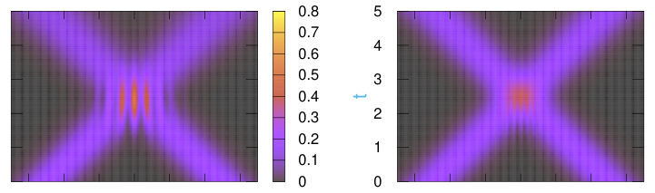
<figcaption class="paper-figure-caption"><b>Fig 3.</b> FIG. 3: Density plots of the probability density for the superposition state (51) in the x-t plane within the framework of the scaled CL equation for γ = 0.001 and T = 1. Different panels correspond to quantumness parameters: ϵ = 1 (top left), ϵ = 0.5 (top right), ϵ = 0.2 (bottom left), and ϵ = 0.05 (bottom right). Other parameters are fixed as ¯h = m = kB = 1, x0 = −5, p0 = 2 and σ0 = 1. These figures show how the environment gradually suppresses coherence as ϵ decreases.</figcaption>
</figure>
</div>

<p><strong>Summary.</strong> This paper analyzes the transition from quantum to classical behavior in an open system using the Caldeira-Leggett model. By reformulating dynamics in a Bohmian language and introducing a scaling parameter, the authors demonstrate that thermal effects lead to deterministic trajectories rather than stochastic noise at the level of the effective potential. This offers a unified view of dissipation and decoherence across quantum regimes.</p>
<p><strong>Why it may be interesting.</strong> This work provides a detailed theoretical framework for understanding how thermal environments modify quantum trajectories during the QCT, offering insights beyond standard Markovian or purely quantum descriptions relevant to open quantum systems.</p>
<details>
<summary>Detailed structure</summary>
<p><strong>Main problem.</strong> The paper investigates the quantum-to-classical transition (QCT) for an open quantum system governed by the Caldeira-Leggett model in a thermal environment.</p>
<p><strong>Main result.</strong> It shows that the resulting dynamics remain deterministic even with thermal fluctuations, contrasting with stochastic Langevin descriptions, due to a residual structure in the effective potential.</p>
<p><strong>Method.</strong> The analysis uses a Bohmian language by expressing the density matrix in polar form and deriving coupled generalized Hamilton-Jacobi and continuity equations. A scaled theory approach is employed to study the transition continuously.</p>
<p><strong>Model / system.</strong> The system is an open quantum system interacting with a harmonic bath, modeled via the Caldeira-Leggett (CL) equation. The dynamics are analyzed in the high-temperature limit using a scaling parameter ($\epsilon$) that controls the approach to classicality.</p>
<p><strong>Key observables.</strong> Coherence loss (quantified by $\ell_1$-norm), effective potential ($Q$), and deterministic trajectories for phase/amplitude evolution.</p>
<p><strong>Important parameters / regimes.</strong> Quantumness parameter ($\epsilon$ or $\hbar$), Temperature, Dissipation coefficient ($\gamma$).</p>
<p><strong>Assumptions / limitations.</strong> The analysis is restricted to the high-temperature Ohmic CL model. The derivation of the scaled theory requires specific mathematical extensions not explicitly derived within the framework.</p>
<p><strong>Figures summary.</strong> Not specified in notes; focuses on deriving equations and analyzing functional dependencies rather than summarizing figure content.</p>
<p><strong>Paper structure.</strong> The paper develops the dynamics using polar decomposition, derives coupled HJ/continuity equations, introduces a scaling parameter ($\epsilon$), analyzes the effective potential's structure across regimes, and contrasts the deterministic results with stochastic expectations.</p>
</details>
<details>
<summary>Abstract</summary>
<p>The dynamics of an open quantum system in the high-temperature regime of the Caldeira-Leggett model using a Bohmian language is investigated. By expressing the density matrix in polar form, generalized continuity and Hamilton-Jacobi equations are obtained. Thermal effects appear explicitly in the former, while they influence the latter only indirectly through an effective potential. Remarkably, the effective potential does not vanish in the classical limit and cannot, in general, be decomposed into simple additive quantum and thermal contributions. Instead, it retains a nontrivial structure leading to a residual temperature dependence in the resulting dynamics. As a consequence, the resulting temperature-dependent-classical trajectories remain deterministic even in the presence of a thermal environment. This behavior contrasts with the stochastic dynamics observed in the Langevin description and reflects the ensemble-based nature of the present approach. To further explore the quantum-to-classical transition, a scaled version of the Caldeira-Leggett equation is introduced by scaling both the density matrix and Planck constant through a quantumness parameter. This parameter takes the value one in the fully quantum regime and smoothly approaches zero in the classical limit. Applications to Gaussian states demonstrate a gradual suppression of coherence and interference, governed jointly by thermal effects and the transition parameter.</p>
</details>
<p><sub><a href="#top">↑ back to top</a></sub></p>

<p><a id="paper-2608.00225"></a></p>
<h3 id="dissipation-in-periodically-driven-quantum-systems-partial-secularization-and-thermodynamic-consistency"><a href="http://arxiv.org/abs/2608.00225v1">Dissipation in Periodically Driven Quantum Systems: Partial Secularization and Thermodynamic Consistency</a></h3>
<p><strong>Authors:</strong> Luísa T. Tude, Carlos Ortega-Taberner, Roberta Zambrini, Gonzalo Manzano<br>
<strong>Type:</strong> theory · <strong>Category:</strong> statistical mechanics · <strong>PDF:</strong> <a href="https://arxiv.org/pdf/2608.00225v1">https://arxiv.org/pdf/2608.00225v1</a><br>
<strong>Analysis basis:</strong> full PDF text, analyzed in chunks
<strong>Topic relevance:</strong> 🔥 <code>methods for driven-dissipative</code> <strong>4/5</strong> · 🔥 <code>non-equilibrium dynamics</code> <strong>4/5</strong> · <code>driven-dissipative phase transition</code> <strong>3/5</strong> · <code>correlated / nonlocal dissipation</code> <strong>2/5</strong> · <code>non-equilibrium universality</code> <strong>2/5</strong> · <code>Keldysh / 2PI / non-Gaussian methods</code> <strong>1/5</strong> · <code>analog quantum simulation</code> <strong>1/5</strong></p>
<div class="figure-strip-hint">↔ Scroll figures horizontally</div>
<div class="paper-figures-scroll">
<figure class="paper-figure-card">
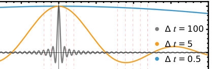
<figcaption class="paper-figure-caption"><b>Fig 1.</b> Figure 1. Illustration of the effect of coarse-graining on the Kossakowski matrix for different averaging intervals. Three cases are displayed corresponding to different time intervals ∆t compatible with full secular approximation (gray), the Floquet-Redfield equation (blue) and an intermediate regime (orange). The sinc function leads to a damping of some of the off-diagonal elements Kα,α′ when the frequency difference α −α′ becomes large. As an example, we show the resulting frequency differences α −α′ of the oscillating terms in the Kossakowski matrix (dashed red vertical lines) for the driven two-level system studied in Sec. 6.1, with Hamiltonian Eq. (44). We use units such that ω0 = 1...</figcaption>
</figure>
<figure class="paper-figure-card">
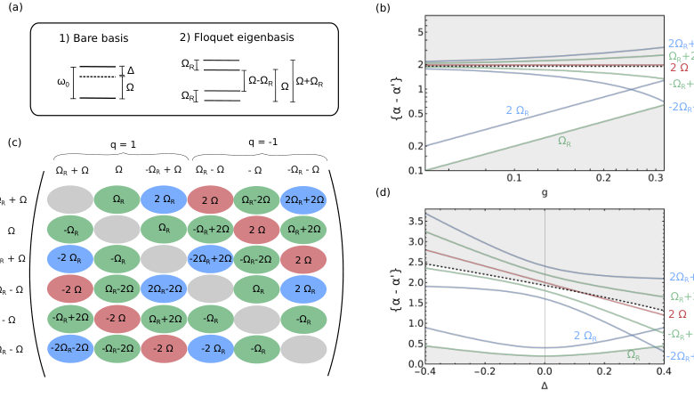
<figcaption class="paper-figure-caption"><b>Fig 2.</b> Figure 2. a. Energy diagram of the driven two-level system in the bare basis and in the Floquet eigenbasis. The Floquet eigenstates are separated by ΩR, and the Floquet replicas are shifted by Ω. b. Maximum coarse-grain frequency resolution ωmax = 2π/∆tmin as a function of g is depicted in black dashed. The minimum ∆t is the finest time resolution for a Markovian master equation to yield a positive Kossakowski matrix. Off-diagonal oscillation frequencies {α −α′} are color-coded as in (c). The gray shaded regions represent the limits of validity of the coarse grain interval (28) c. Kossakowski matrix, with the oscillation frequency of each term indicated at its position and colors denoting...</figcaption>
</figure>
<figure class="paper-figure-card">
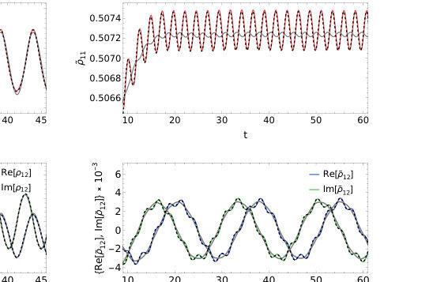
<figcaption class="paper-figure-caption"><b>Fig 3.</b> Figure 3. Exact dynamics of the driven two-level system in the Schr¨odinger picture (left), and interaction picture (right). The top row has the populations and the bottom row coherences. We show curves calculated with the Floquet-Redfield (black dotted), and coarse-grained (solid gray) master equations, together with exact non-Markovian simulations (colored lines). In the long-time limit, the system exhibits oscillations with frequency Ω in the Schr¨odinger picture, which are well captured by the three approaches. In the interaction picture, we observe population oscillations with frequency 2Ωthat are well captured by the Floquet-Redfield equation, but present reduced amplitude in the...</figcaption>
</figure>
<figure class="paper-figure-card">
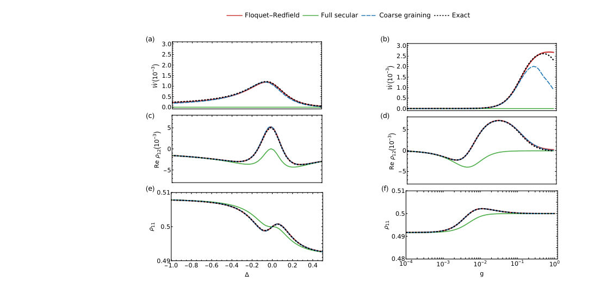
<figcaption class="paper-figure-caption"><b>Fig 4.</b> Figure 4. Comparison of the averages over a period of the drive of work (a. and b.), steady state coherence (c. and d.), and population (e. and f.) given by the coarse-grained, the Floquet-Redfield, and the full secular master equations, and an exact non-Markovian simulation (see legend) as a function of detuning (left) and driving strength (right). The full secular approximation can describe the populations and real part of coherences in the off-resonant regime, but fails to provide physical values of the imaginary part of coherences and therefore work current. The coarse-grained and Floquet-Redfield master equations agree with the exact simulation for the parameter inside its validity...</figcaption>
</figure>
<figure class="paper-figure-card">
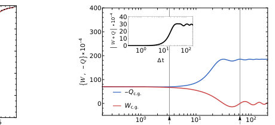
<figcaption class="paper-figure-caption"><b>Fig 5.</b> Figure 5. Averaged steady state and heat per cycle as a function of the detuning (left) and coarse-grain time interval (right). The energy currents are consistent with the first law of thermodynamics for small ∆t. The inset of the right panel shows the sum W + Q, representing the accuracy with which the first law of thermodynamics is obtained.</figcaption>
</figure>
</div>

<p><strong>Summary.</strong> This paper tackles the failure of standard master equation approximations when modeling open quantum systems under periodic driving. The authors introduce a coarse-graining technique that regularizes these models, ensuring thermodynamic consistency for calculated energy currents. This framework offers a practical way to validate the accuracy of Markovian descriptions in non-equilibrium quantum dynamics.</p>
<p><strong>Why it may be interesting.</strong> This work provides a crucial theoretical tool for correctly applying approximations (like secularization) in complex, periodically driven quantum systems relevant to quantum thermodynamics and energy harvesting.</p>
<details>
<summary>Detailed structure</summary>
<p><strong>Main problem.</strong> The study addresses unphysical predictions for steady-state energy currents that arise when applying a strong secular approximation to master equations describing periodically driven open quantum systems.</p>
<p><strong>Main result.</strong> A coarse-grained formulation of the master equation successfully regularizes these thermodynamic inconsistencies, yielding completely positive dynamics and consistent energy current calculations.</p>
<p><strong>Method.</strong> The authors propose a coarse-graining approach applied to the Floquet-Redfield master equation, which allows for partial secularization while maintaining physical consistency.</p>
<p><strong>Model / system.</strong> The system involves open quantum systems subjected to periodic driving, modeled by Hamiltonians $H(t) = H_S(t) + H_B + H_{SB}$. The dynamics are analyzed using Floquet-Born-Markov master equations.</p>
<p><strong>Key observables.</strong> Steady state energy currents (work and heat contributions), complete positivity of evolution, and the coarse-graining time interval ($ au_{CG}$).</p>
<p><strong>Important parameters / regimes.</strong> The driving period $T$, coupling strengths ($\lambda$), and characteristic timescales are key parameters used to assess approximation validity.</p>
<p><strong>Assumptions / limitations.</strong> The standard approach relies on Born and Markov approximations; the proposed method introduces a coarse-graining time $  au_{CG}$ to regularize these issues.</p>
<p><strong>Figures summary.</strong> Figure 9 compares RWA vs. exact dynamics for off-diagonal elements, period-averaged steady-state populations, and energy flow during a cycle.</p>
<p><strong>Paper structure.</strong> The paper first establishes the problem with the full secular approximation leading to thermodynamic inconsistencies; it then introduces the coarse-grained master equation approach, demonstrating its consistency by comparing results against exact non-Markovian simulations for specific examples like driven two-level systems and masers.</p>
</details>
<details>
<summary>Abstract</summary>
<p>Periodically driven open quantum systems are central to quantum thermodynamics and quantum control. These systems are typically described using Floquet-Born-Markov master equations, derived with the use of a full secular approximation, and whose thermodynamic implications are often overlooked. In this context, we show that such a strong secular approximation may lead to unphysical predictions for steady state energy currents. We then demonstrate that a coarse-grained formulation of the master equation can regularize these issues while yielding completely positive dynamics and consistent energy currents. The coarse-graining time has a clear physical interpretation, as it defines the temporal resolution at which a Markovian master equation can describe the evolution of the periodically driven system. We show the consistency and validity of our approach by comparing to an exact non-Markovian simulation in paradigmatic examples: a driven two-level system and a three-level maser coupled to hot and cold thermal reservoirs. Our work provides a practical framework for correctly applying the secular approximation in periodically driven-dissipative systems and for assessing the accuracy of master equations of the GKSL form.</p>
</details>
<p><sub><a href="#top">↑ back to top</a></sub></p>

<p><a id="paper-2608.02038"></a></p>
<h3 id="convergence-monitoring-of-quantum-gibbs-samplers"><a href="http://arxiv.org/abs/2608.02038v1">Convergence monitoring of quantum Gibbs samplers</a></h3>
<p><strong>Authors:</strong> Nikolaos Louloudis, Ruben Ibarrondo, Mikel Sanz, Mario Berta<br>
<strong>Type:</strong> theory · <strong>Category:</strong> statistical mechanics · <strong>PDF:</strong> <a href="https://arxiv.org/pdf/2608.02038v1">https://arxiv.org/pdf/2608.02038v1</a><br>
<strong>Analysis basis:</strong> full PDF text, analyzed in chunks
<strong>Topic relevance:</strong> 🔥 <code>quantum measurements</code> <strong>4/5</strong> · <code>measurement-induced transitions</code> <strong>3/5</strong> · <code>methods for driven-dissipative</code> <strong>3/5</strong> · <code>non-equilibrium dynamics</code> <strong>2/5</strong> · <code>Keldysh / 2PI / non-Gaussian methods</code> <strong>1/5</strong> · <code>correlated / nonlocal dissipation</code> <strong>1/5</strong> · <code>driven-dissipative phase transition</code> <strong>1/5</strong> · <code>non-equilibrium universality</code> <strong>1/5</strong></p>
<div class="figure-strip-hint">↔ Scroll figures horizontally</div>
<div class="paper-figures-scroll">
<figure class="paper-figure-card">
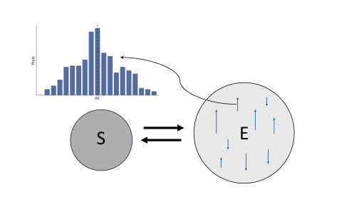
<figcaption class="paper-figure-caption"><b>Fig 1.</b> Figure 1. Davies limit intuition for the convergence monitor- ing scheme. Weak system–bath coupling induces transitions labeled by Bohr frequencies ν. These transitions are inferred from the bath without directly measuring the system. At thermal equilibrium, detailed balance implies symmetry of the equilibrium transition weights, M(ν) = M(−ν), so the transition profile is symmetric about ν = 0. Away from equi- librium an asymmetric profile signals a residual imbalance in the energy-exchange record. The algorithmic sampler of Sec. II replaces the Bohr frequencies by finite resolution quasi- frequencies. In Sec. III we derive the corresponding shifted symmetry of the quasi-frequencies which...</figcaption>
</figure>
<figure class="paper-figure-card">
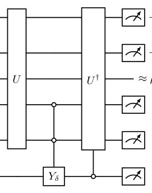
<figcaption class="paper-figure-caption"><b>Fig 2.</b> Figure 2. Implementation of Lindbladian simulation via weak measurement. The unitary U is the block encoding of the jumps in LA as seen in Eq. (9). Its implementation is de- scribed in Fig. 7. There are two cases. If q′ = 0, all ancillas are reset and the system remains in ρ. If q′ = 1, the Lindbla- dian step is applied to S, and, conditioned on B = q = 0 the registers A and E return to a and ω, respectively; otherwise, the step is discarded.</figcaption>
</figure>
<figure class="paper-figure-card">
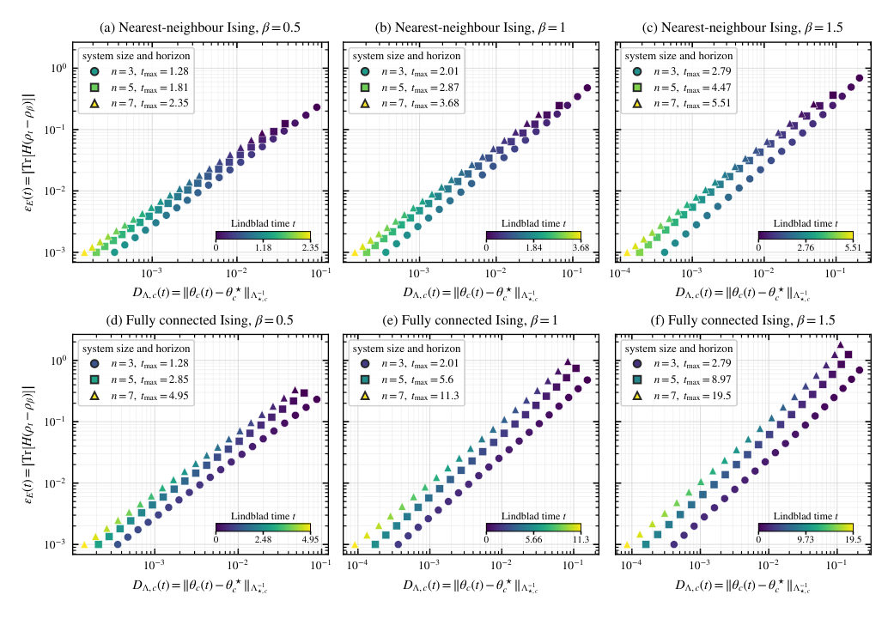
<figcaption class="paper-figure-caption"><b>Fig 3.</b> Figure 3. Relation between the deterministic target distance DΛ,c(t) and the energy error εE,c(t) under deterministic Lindblad evolution. Rows correspond to the nearest-neighbour and fully connected Ising families, and columns to β ∈{0.5, 1.0, 1.5}. Marker shape distinguishes n ∈{3, 5, 7}, and color gives the physical Lindblad time. The legends report the actual terminal time tmax for each system size. The equilibration time increase with n and β and is also larger for the fully connected model. In all cases, we observe a co-decay which confirms that the quasi-frequency distribution can monitor the relaxation of the energy observable.</figcaption>
</figure>
<figure class="paper-figure-card">
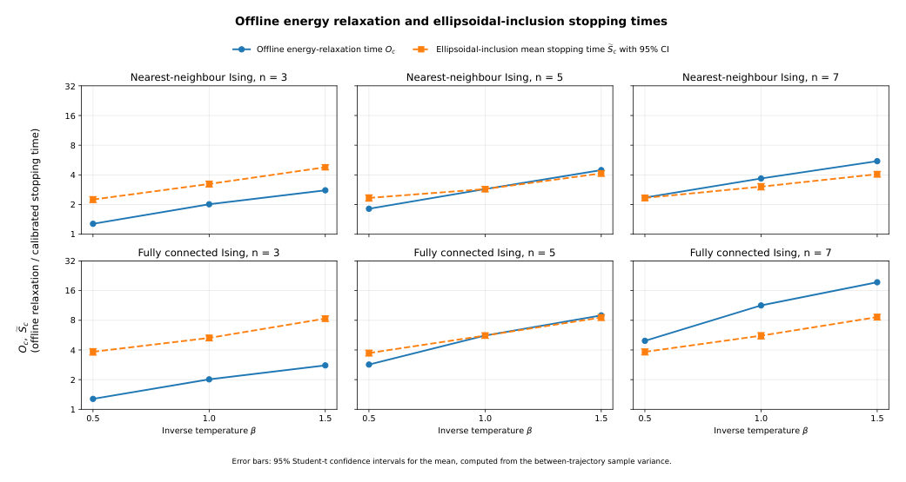
<figcaption class="paper-figure-caption"><b>Fig 4.</b> Figure 4. Inverse-temperature dependence of the deterministic energy-relaxation time Oc and the model-calibrated mean stopping time eSc of the ellipsoidal inclusion rule. Rows correspond to the two model families and columns to n ∈{3, 5, 7}. Error bars are 95% Student-t confidence intervals for the mean over 100 independent trajectories. The deterministic reference carries no trajectory-sampling error bar. A base-two logarithmic vertical axis is used. We see that the scaling of eSc has the same qualitative behavior as the offline oracle Oc.</figcaption>
</figure>
<figure class="paper-figure-card">
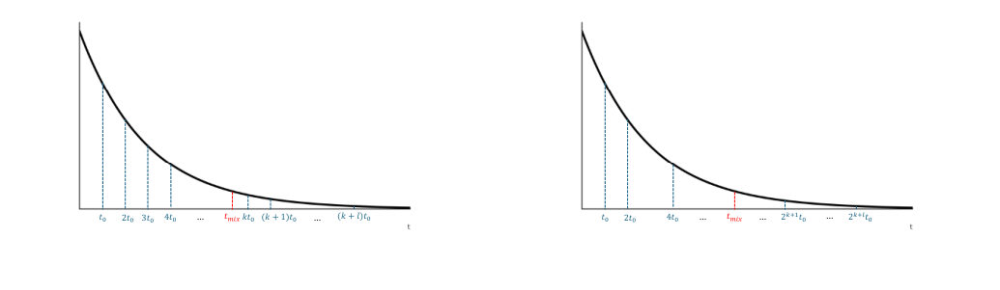
<figcaption class="paper-figure-caption"><b>Fig 5.</b> Figure 5. Naive convergence monitoring by repeated state preparation and destructive measurement. The black curve represents the relaxation of an observable (for simplicity exponential), the vertical dashed lines denote monitoring times, and tmix marks the unknown time at which the selected convergence tolerance is attained. For a fixed verification depth l, the linearly spaced grid uses Θ(tmix/t0) nodes and cumulative evolution time Θ(t2 mix/t0), whereas the geometrically spaced grid uses Θ(log(tmix/t0)) nodes and cumulative evolution time Θ(tmix). More generally, the verification overhead is Θ(2ltmix) for the geometrically spaced grid. All costs are multiplied by the number of independent...</figcaption>
</figure>
</div>

<p><strong>Summary.</strong> The paper introduces a novel, low-cost method to monitor the convergence of Quantum Gibbs Samplers (QGSs) used for sampling thermal equilibrium states. It achieves this by monitoring an energy balance condition derived from weak measurement records inherent to the QGS process. This diagnostic tool allows researchers to determine when simulations have reached equilibrium without needing costly auxiliary measurements.</p>
<p><strong>Why it may be interesting.</strong> This is highly relevant for theoretical physicists working on open quantum systems or many-body dynamics as it provides a practical tool to verify convergence in complex, non-equilibrium simulations without requiring auxiliary measurements.</p>
<details>
<summary>Detailed structure</summary>
<p><strong>Main problem.</strong> The primary goal is to develop an efficient, low-cost method to diagnose when a quantum Gibbs sampler (QGS) has converged to the true thermal equilibrium state.</p>
<p><strong>Main result.</strong> A Hamiltonian-agnostic stopping criterion is proposed that monitors energy flow balance conditions derived from weak measurements inherent in the QGS process. This allows for convergence diagnosis using only data already generated by the simulation.</p>
<p><strong>Method.</strong> The method exploits the physical requirement that net energy flow vanishes at equilibrium, translating this into a statistical test on the distribution of quasi-frequencies extracted from weak measurements.</p>
<p><strong>Model / system.</strong> The system is a quantum state evolving towards the Gibbs state $\rho_\beta = e^{-\beta H} / \text{Tr}(e^{-\beta H})$ using Quantum Markov Chain Monte Carlo methods (QGSs). The process simulates open-system dynamics via Lindbladians.</p>
<p><strong>Key observables.</strong> The mean and third centered moment of the weak-measurement record, which are used to construct a confidence ellipsoid for monitoring convergence.</p>
<p><strong>Important parameters / regimes.</strong> Inverse temperature $\beta$, frequency resolution parameter $\sigma_E$, and tolerance parameters $P_j$ defining acceptable deviations from equilibrium constraints.</p>
<p><strong>Assumptions / limitations.</strong> The criterion is a practical diagnostic, not a worst-case guarantee, relying on the underlying structure of energy flow conservation and detailed balance conditions.</p>
<p><strong>Figures summary.</strong> Figure 1 illustrates the symmetry of transition weights at equilibrium versus asymmetry away from it. Figure 2 details the circuit implementation of Lindbladian simulation via weak measurement.</p>
<p><strong>Paper structure.</strong> The paper introduces the problem, proposes the energy-flow based criterion using weak measurements, provides statistical analysis and numerical studies to validate its performance, and discusses limitations regarding worst-case guarantees.</p>
</details>
<details>
<summary>Abstract</summary>
<p>Recent progress in fully quantum Markov chain Monte Carlo methods enables efficient Gibbs-state sampling on quantum computers [Chen et al., Nature 646, 561 (2025)]. Although rigorous worst-case bounds on mixing times remain largely inaccessible for classically intractable systems, experience from classical Monte Carlo suggests that convergence of relevant observables may nevertheless be rapid. This raises the practical question of how to diagnose convergence efficiently, i.e., with at most polynomial overhead. We propose a low-cost criterion for convergence monitoring that exploits the weak measurements inherent in quantum Gibbs samplers and their qubit-efficient variants [Ding et al., arXiv:2508.05703 (2025)]. Our approach is based on the observation that, at thermal equilibrium, the net energy flow between system and environment vanishes and energy-exchange statistics satisfy a balance condition. This condition appears in the distribution of (quasi-)frequencies extracted from the weak-measurement record and we use it to construct a Hamiltonian-agnostic stopping criterion based solely on data already generated by the sampler. We provide a statistical analysis, along with numerical and analytical studies to understand its performance, assumptions, and limitations.</p>
</details>
<p><sub><a href="#top">↑ back to top</a></sub></p>

<p><a id="paper-2608.02439"></a></p>
<h3 id="detecting-high-dimensional-entanglement-with-simple-measurements"><a href="http://arxiv.org/abs/2608.02439v1">Detecting high-dimensional entanglement with simple measurements</a></h3>
<p><strong>Authors:</strong> Suraj Goel, Alexander Bernal, Gabriele Cobucci, Will McCutcheon, Mehul Malik, Armin Tavakoli<br>
<strong>Type:</strong> both · <strong>Category:</strong> quantum information and computing · <strong>PDF:</strong> <a href="https://arxiv.org/pdf/2608.02439v1">https://arxiv.org/pdf/2608.02439v1</a><br>
<strong>Analysis basis:</strong> full PDF text, analyzed in chunks
<strong>Topic relevance:</strong> 🔥 <code>entanglement &amp; information structure</code> <strong>4/5</strong> · <code>QC/QI experiment</code> <strong>3/5</strong> · <code>quantum measurements</code> <strong>3/5</strong> · <code>quantum optics experiment</code> <strong>3/5</strong> · <code>analog quantum simulation</code> <strong>1/5</strong> · <code>measurement-induced transitions</code> <strong>1/5</strong></p>
<div class="figure-strip-hint">↔ Scroll figures horizontally</div>
<div class="paper-figures-scroll">
<figure class="paper-figure-card">
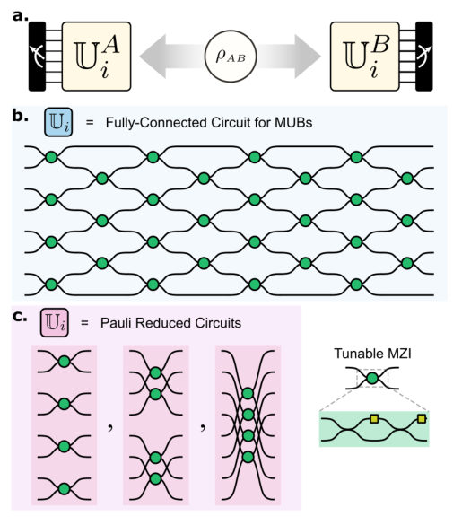
<figcaption class="paper-figure-caption"><b>Fig 1.</b> FIG. 1: Simpler measurements for entanglement wit- nessing. (a) When a high-dimensional quantum state is distributed between two parties, they perform joint mea- surements to verify the entanglement dimensionality. (b) Schematic of conventional measurements in mutually unbi- ases bases (MUBs) which correspond to a fully-connected op- tical circuit. (c) Our method requires lower-depth circuits connected in a few different pairing configurations. Mach- Zehnder interferometer (MZI) based optical circuits are shown used to measure path-encoded quantum states.</figcaption>
</figure>
<figure class="paper-figure-card">
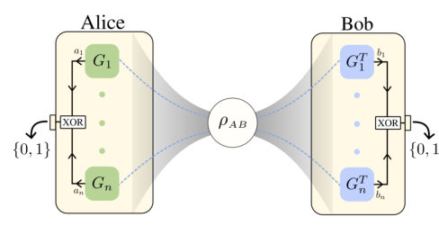
<figcaption class="paper-figure-caption"><b>Fig 2.</b> FIG. 2: Alice and Bob each receive a share of ρAB consisting of n qubits. They measure each qubit using an appropriate Pauli observable, G (GT ). From the respective string of out- comes, {a1, . . . , an} and {b1, . . . , bn}, they each compute the parity and return it as their respective final output.</figcaption>
</figure>
<figure class="paper-figure-card">
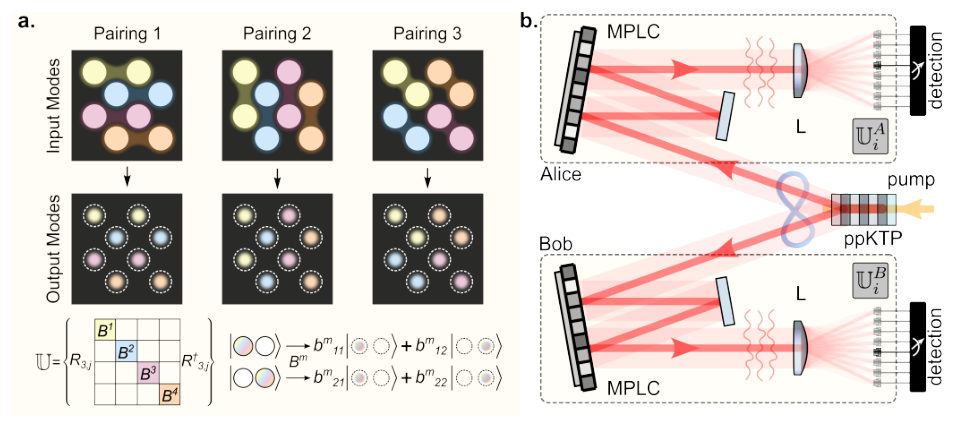
<figcaption class="paper-figure-caption"><b>Fig 3.</b> FIG. 3: Illustration of the experimental scheme. (a) Measurement circuit transforms macro-pixel modes to spatially separated Gaussian spots. The eight input pixels (and output spots) are arranged in a configuration that allows for nearest neighbour operations in three different pairing configurations (R3,j), effectively needing four parallel two-mode operations. The measurement operation U corresponding to the Pauli string observables for d = 8 can be expressed as a block diagonal matrix, with blocks Bj, each operating on a pair of macro-pixels resulting in a pair of outcomes. (b) Schematic illustration of the experimental setup, where the entangled pair of photons are generated using...</figcaption>
</figure>
<figure class="paper-figure-card">
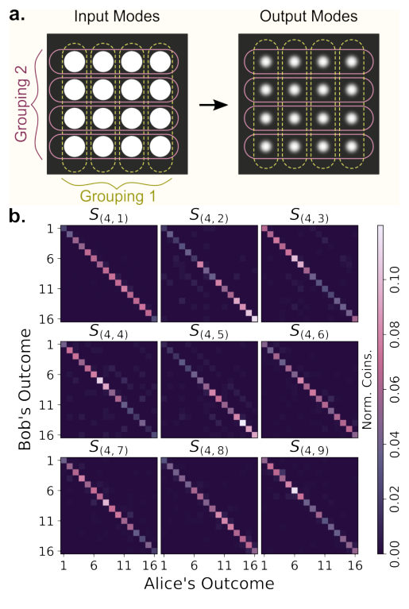
<figcaption class="paper-figure-caption"><b>Fig 4.</b> FIG. 4: Entanglement detection in a 16-dimensional subspace (a) 16 macro-pixel input modes are chosen in a 4-column grid to be transformed into a grid of spatially sepa- rated Gaussian spots such that two configurations of 4-mode groups are possible in enabling nearest neighbour interac- tion. The nine Pauli string operators can be expressed as four parallel 4 × 4 operations in the bespoke configurations. These operations are implemented using a three-plane MPLC. (b) Measured normalised coincidence (Norm. Coins.) matri- ces between Alice’s and Bob’s outcomes corresponding to each Pauli-string observable for d = 16 dimensional state. The measured data certifies the bound for 13-dimensional...</figcaption>
</figure>
<figure class="paper-figure-card">
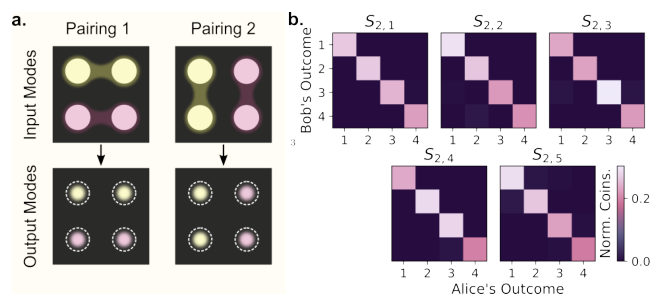
<figcaption class="paper-figure-caption"><b>Fig 5.</b> FIG. 5: (a) The four input pixels (and output spots) are arranged in a grid configuration that allows for nearest neighbour operations in two different permutations (Rj), effectively needing two parallel two-mode operations. (b) Measured normalised coincidence (Norm. Coins.) matrices between Alice’s and Bob’s outcomes corresponding to each Pauli-string observable for d = 4 dimensional state.</figcaption>
</figure>
</div>

<p><strong>Summary.</strong> The paper presents a novel, experimentally simpler method for detecting high-dimensional entanglement (Schmidt number) using only single-qubit measurements on photonic spatial modes. By developing and testing a witness parameter based on Pauli observables, the authors show that complex certification tasks can be achieved with significantly reduced experimental complexity compared to standard methods.</p>
<p><strong>Why it may be interesting.</strong> This work directly addresses experimental bottlenecks in quantum information processing by proposing resource-efficient entanglement verification protocols applicable to scalable photonic quantum technologies.</p>
<details>
<summary>Detailed structure</summary>
<p><strong>Main problem.</strong> The core problem is developing a measurement scheme to detect high-dimensional entanglement, quantified by the Schmidt number ($k$), that avoids complex local basis measurements.</p>
<p><strong>Main result.</strong> The authors demonstrate that simple measurements using only sequences of single-qubit observables are sufficient and scalable enough to certify high-dimensional entanglement in photonic systems.</p>
<p><strong>Method.</strong> They introduce a witness parameter $W_n(
ho_{AB})$ derived from Pauli string observables, which allows for bounding the Schmidt number based on experimentally feasible low-depth quantum circuits.</p>
<p><strong>Model / system.</strong> The work utilizes high-dimensional photonic spatial mode entanglement, implemented using Multi-Plane Light Converters (MPLCs) and single-photon detectors. The theoretical framework involves analyzing Pauli string operators ($S_{n,j}$) acting on the bipartite state $
ho_{AB}$.</p>
<p><strong>Key observables.</strong> The witness parameter $W_n(
ho_{AB})$, the Schmidt number ($k$), and fidelity ($F$) are key observables.</p>
<p><strong>Important parameters / regimes.</strong> The local dimension ($d=2^n$) and the entanglement dimension ($k$) are central parameters. The depth of the required quantum circuit is a critical complexity parameter.</p>
<p><strong>Assumptions / limitations.</strong> Assumptions include the validity of using Pauli string measurements to bound the Schmidt number, and in some derivations, assuming pure states or restricting analysis to diagonal operators.</p>
<p><strong>Figures summary.</strong> Figures illustrate the comparison between complex conventional measurement circuits versus the proposed low-depth circuit scheme. Other figures detail the experimental setup involving SPDC sources and MPLC components for measuring coincidence matrices.</p>
<p><strong>Paper structure.</strong> The paper develops theoretical bounds on entanglement measures ($\alpha(n, k)$) using multiple mathematical approaches (fidelity vs. element-wise maximization). It then experimentally validates these concepts by implementing the measurement scheme using photonic systems, culminating in numerical results that confirm the detection capability.</p>
</details>
<details>
<summary>Abstract</summary>
<p>The standard benchmark for high-dimensional entanglement is the number of dimensions in which entanglement must be present in order to generate the state. This is called the Schmidt number and its detection is usually based on implementing an appropriate set of local basis measurements. However, as quantum technology brings increasingly large physical dimensions within reach, the implementation of such measurements typically becomes more costly. Here, we develop a scheme for detecting Schmidt numbers based only on sequences of single-qubit observables. These measurements are simpler to implement as they require only low-depth quantum circuits. Using up to sixteen-dimensional photonic spatial mode entanglement and multi-plane light conversion technology, we demonstrate how it simplifies setup complexity and successfully detects the maximal (or close-to-maximal) Schmidt number. Our results reveal that simple and more scalable measurements are sufficient to detect high-dimensional entanglement properties.</p>
</details>
<p><sub><a href="#top">↑ back to top</a></sub></p>

<p><a id="paper-2608.00169"></a></p>
<h3 id="dynamics-of-nucleation-in-thermal-phase-transitions"><a href="http://arxiv.org/abs/2608.00169v1">Dynamics of nucleation in thermal phase transitions</a></h3>
<p><strong>Authors:</strong> Oliver Gould, Joonas Hirvonen, Andrey Shkerin, Sergey Sibiryakov<br>
<strong>Type:</strong> theory · <strong>Category:</strong> statistical mechanics · <strong>PDF:</strong> <a href="https://arxiv.org/pdf/2608.00169v1">https://arxiv.org/pdf/2608.00169v1</a><br>
<strong>Analysis basis:</strong> full PDF text, analyzed in chunks
<strong>Topic relevance:</strong> 🔥 <code>Keldysh / 2PI / non-Gaussian methods</code> <strong>4/5</strong> · <code>methods for driven-dissipative</code> <strong>3/5</strong> · <code>non-equilibrium dynamics</code> <strong>3/5</strong> · <code>driven-dissipative phase transition</code> <strong>2/5</strong> · <code>analog quantum simulation</code> <strong>1/5</strong> · <code>correlated / nonlocal dissipation</code> <strong>1/5</strong> · <code>non-equilibrium universality</code> <strong>1/5</strong></p>
<div class="figure-strip-hint">↔ Scroll figures horizontally</div>
<div class="paper-figures-scroll">
<figure class="paper-figure-card">
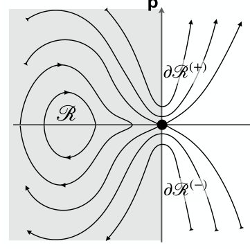
<figcaption class="paper-figure-caption"><b>Fig 1.</b> Figure 1: Phase-space trajectories and the metastable region R (shaded gray) for the cal- culation of the decay rate. The flux out of R crosses the surface ∂R(+), selected by the theta-function in Eq. (1). Trajectories from the outer region enter R through ∂R(−). The black dot indicates the transition state (TS).</figcaption>
</figure>
<figure class="paper-figure-card">
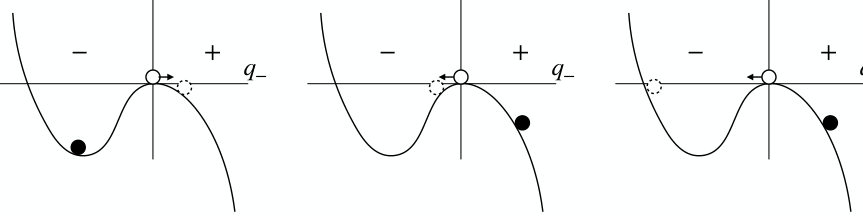
<figcaption class="paper-figure-caption"><b>Fig 2.</b> Figure 3: Different types of re-crossing motion. The particle starts from the top of the barrier (white solid circle) towards the true (a) or false (b,c) vacuum. Due to interactions with the heat bath, the particle turns around (white dashed circle), re-crosses the barrier and ends up in the region opposite its initial direction of motion (black circle). The re-crossing can happen promptly, before the particle leaves the vicinity of the barrier (a,b), or after oscillating in the false vacuum region (c).</figcaption>
</figure>
<figure class="paper-figure-card">
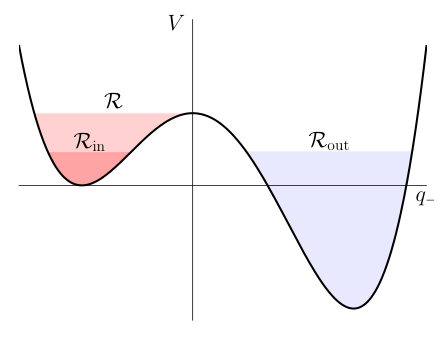
<figcaption class="paper-figure-caption"><b>Fig 3.</b> Figure 4: Three regions of phase space, here shown on a one-dimensional potential: Rin ⊂R, deep in the metastable phase; R the full metastable phase; and Rout ⊂¯R, where ¯R is the complement of R, far outside the metastable phase. The nucleation rate is the flux through ∂R carried by trajectories going from Rin to Rout.</figcaption>
</figure>
<figure class="paper-figure-card">
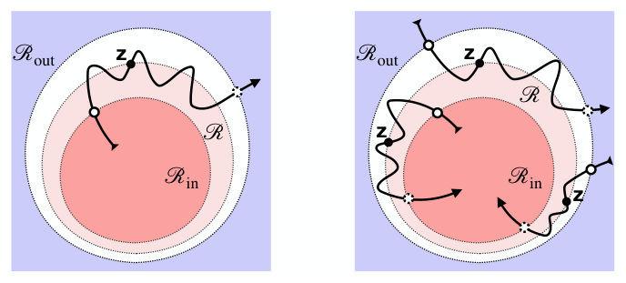
<figcaption class="paper-figure-caption"><b>Fig 4.</b> Figure 5: Different types of trajectories crossing the boundary of the metastable region R in the outward direction at a point z marked by a black dot. The part of the trajectory between the solid and dashed white circles is the orbit oz. The indicator function θin→out(oz) equals unity for the orbit in panel (a) and vanishes for all orbits in panel (b). Only the trajectory in panel (a) contributes to the MRT rate (35).</figcaption>
</figure>
<figure class="paper-figure-card">
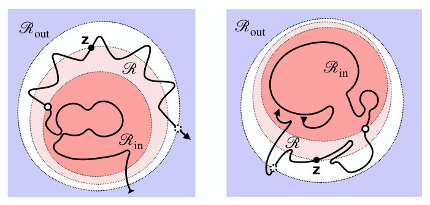
<figcaption class="paper-figure-caption"><b>Fig 5.</b> Figure 6: Sloshing re-crossing trajectories that contribute into the MRT rate (35) but must be excluded from the steady-state rate Γ.</figcaption>
</figure>
</div>

<p><strong>Summary.</strong> This paper develops a comprehensive dynamical framework for calculating the decay rate during first-order phase transitions in field theory. It introduces a general formula that corrects the standard equilibrium estimate by including a crucial dynamical prefactor. The work is significant because it provides a robust method applicable even when the system deviates significantly from thermal equilibrium.</p>
<p><strong>Why it may be interesting.</strong> While focused on high-energy field theory, the methodology of calculating non-equilibrium rates via flux methods is highly relevant to open quantum systems where thermalization assumptions break down (e.g., driven or dissipative quantum dynamics).</p>
<details>
<summary>Detailed structure</summary>
<p><strong>Main problem.</strong> The study focuses on accurately determining the dynamical effects during thermal first-order phase transitions, specifically calculating the decay rate of a metastable vacuum state.</p>
<p><strong>Main result.</strong> The authors provide a general formula for the thermal decay rate that incorporates a dynamical prefactor, which accounts for deviations from equilibrium predictions and can be systematically evaluated.</p>
<p><strong>Method.</strong> They develop a generalized approach similar to reactive flux methods in physical chemistry, moving beyond the assumptions of local thermodynamic equilibrium inherent in standard Transition State Theory (TST).</p>
<p><strong>Model / system.</strong> The system is described by field theory undergoing thermal false vacuum decay. The dynamics are modeled using phase space probability flux calculations derived from a Hamiltonian describing the metastable state.</p>
<p><strong>Key observables.</strong> The primary observable is the thermal decay rate, and its key diagnostic tool is the dynamical prefactor that modifies the equilibrium TST rate.</p>
<p><strong>Important parameters / regimes.</strong> Key regimes include the semiclassical regime ($T_q \ll T \ll E_{	ext{ts}}$), and the analysis considers violations of 'thermality conditions' when a steady-state rate does not exist.</p>
<p><strong>Assumptions / limitations.</strong> The initial framework relies on defining the decay rate via phase-space flux, but the core contribution is addressing the failure of the assumption of global thermal equilibrium near the transition state.</p>
<p><strong>Figures summary.</strong> Figure 1 illustrates the geometry of the process in phase space, defining the metastable region $R$, its boundary $\partial R$, and the Transition State (TS).</p>
<p><strong>Paper structure.</strong> The paper establishes the problem by noting TST's limitations, proposes a general dynamical formula for the decay rate including the prefactor, details the systematic evaluation recipe, validates it against known results, and concludes with numerical simulations showing non-perturbative effects.</p>
</details>
<details>
<summary>Abstract</summary>
<p>We study dynamical effects during nucleation in thermal first-order phase transitions in field theory. Focusing on the classical regime of the decay of a metastable state, we present the general formula for the thermal decay rate including the dynamical prefactor and give a recipe for its systematic evaluation. We describe the physical mechanism which reduces the actual thermal decay rate with respect to the statistical rate obtained in equilibrium theory. We also discuss the thermality conditions ensuring the existence of a steady-state thermal rate, in which case our formula is exact up to exponentially small corrections. We show that it reproduces the known results for the nucleation rate in stochastic mechanics and field theory, and allows us to unify and go beyond them. We illustrate this in real-time numerical simulations of simple field theory models. We observe significant non-perturbative contributions which can dominate the dynamical prefactor in weakly-coupled field theories at moderate exponential suppression of the decay rate. We explore the connection of these non-perturbative effects to oscillons. Notably, our numerical method requires exponentially less computing time than direct simulations of decays and is thus applicable to systems with arbitrarily strong exponential suppression. Finally, we discuss small or poorly thermalized systems when the thermality conditions are violated and the steady-state rate does not exist.</p>
</details>
<p><sub><a href="#top">↑ back to top</a></sub></p>

<p><a id="paper-2608.02249"></a></p>
<h3 id="phase-drift-limits-and-adaptive-quadrature-readout-in-programmable-photonic-processors"><a href="http://arxiv.org/abs/2608.02249v1">Phase-Drift Limits and Adaptive Quadrature Readout in Programmable Photonic Processors</a></h3>
<p><strong>Authors:</strong> Gökhan Elmas, Igor A. Litvin, Janis Nötzel<br>
<strong>Type:</strong> theory · <strong>Category:</strong> quantum information and computing · <strong>PDF:</strong> <a href="https://arxiv.org/pdf/2608.02249v1">https://arxiv.org/pdf/2608.02249v1</a><br>
<strong>Analysis basis:</strong> full PDF text, analyzed in chunks
<strong>Topic relevance:</strong> 🔥 <code>quantum measurements</code> <strong>4/5</strong> · <code>measurement-induced transitions</code> <strong>3/5</strong> · <code>analog quantum simulation</code> <strong>2/5</strong> · <code>Keldysh / 2PI / non-Gaussian methods</code> <strong>1/5</strong> · <code>correlated cavity matter</code> <strong>1/5</strong> · <code>entanglement &amp; information structure</code> <strong>1/5</strong> · <code>interference shaping light</code> <strong>1/5</strong> · <code>methods for driven-dissipative</code> <strong>1/5</strong> · <code>non-equilibrium dynamics</code> <strong>1/5</strong></p>
<div class="figure-strip-hint">↔ Scroll figures horizontally</div>
<div class="paper-figures-scroll">
<figure class="paper-figure-card">
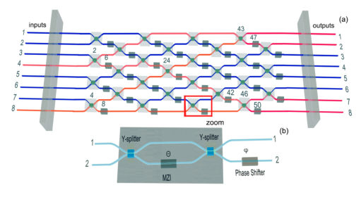
<figcaption class="paper-figure-caption"><b>Fig 1.</b> Figure 1: Eight-mode programmable photonic processor and quadrature-extraction configuration used for simulta- neous sine–cosine phase extraction [9].</figcaption>
</figure>
<figure class="paper-figure-card">
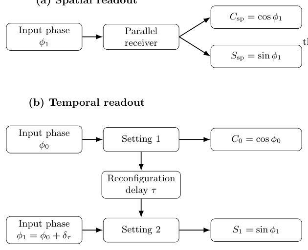
<figcaption class="paper-figure-caption"><b>Fig 2.</b> Figure 2: Spatial and temporal quadrature acquisition. The temporal example shows the order C →S.</figcaption>
</figure>
<figure class="paper-figure-card">
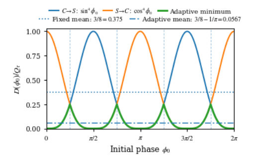
<figcaption class="paper-figure-caption"><b>Fig 3.</b> Figure 3: Phase-dependent drift coefficients for the two fixed quadrature orders and the adaptive minimum. The vertical dashed lines indicate the ordering boundaries. The uniform-phase mean coefficient decreases from 0.375 to 0.0567, corresponding to an 84.9% reduction in drift- induced mean-square error.</figcaption>
</figure>
<figure class="paper-figure-card">
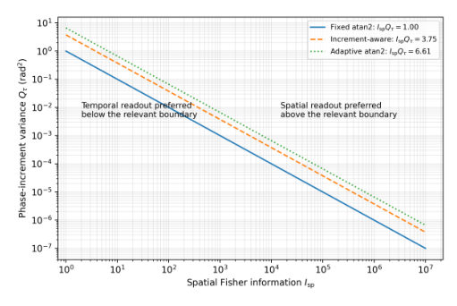
<figcaption class="paper-figure-caption"><b>Fig 4.</b> Figure 4: Architecture-selection boundaries for informa- tion gain g = 1.6. The horizontal and vertical variables are the simultaneous spatial Fisher information and the phase-increment variance at the selected reconfiguration interval. Temporal readout is favored below the boundary associated with its estimator; spatial readout is favored above it. The increment-aware curve is the symmetric local benchmark of Eq. (126). The plot uses Qτ directly and does not require a prescribed delay-scaling law.</figcaption>
</figure>
<figure class="paper-figure-card">
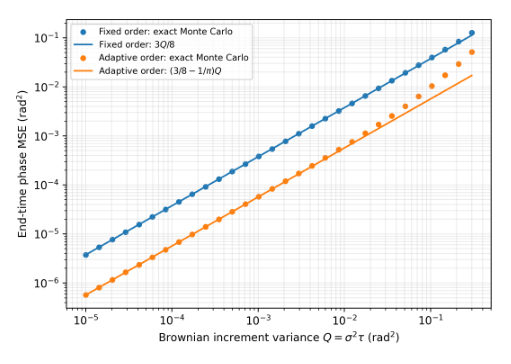
<figcaption class="paper-figure-caption"><b>Fig 5.</b> Figure 5: Exact end-time MSE for fixed and phase- adaptive quadrature ordering. Markers are Monte Carlo results and lines are the first-order expressions.</figcaption>
</figure>
</div>

<p><strong>Summary.</strong> This paper analyzes the fundamental limits on phase estimation in programmable photonic processors when measuring quadrature components sequentially. It develops a theory showing that adaptive measurement ordering can drastically reduce errors caused by unknown phase drift compared to fixed protocols. The results provide crucial guidelines for designing robust quantum optical hardware.</p>
<p><strong>Why it may be interesting.</strong> This work directly addresses resource limitations and estimation fidelity in photonic quantum computation platforms by providing rigorous theoretical limits on phase estimation accuracy under realistic noise models.</p>
<details>
<summary>Detailed structure</summary>
<p><strong>Main problem.</strong> The research quantifies the phase-drift penalty incurred when sequentially measuring sine and cosine quadratures in programmable photonic processors, compared to simultaneous measurement.</p>
<p><strong>Main result.</strong> An adaptive ordering rule significantly outperforms fixed-order methods, reducing the drift-induced Mean Square Error by up to 84.9%.</p>
<p><strong>Method.</strong> The authors derive theoretical bounds using Fisher information and analyze estimation errors based on small-angle approximations for $  ext{atan2}$ reconstruction.</p>
<p><strong>Model / system.</strong> The study uses an eight-mode programmable photonic processor that converts relative optical phases into measurable sine and cosine power pairs, simulating phase evolution over time intervals ($   au$).</p>
<p><strong>Key observables.</strong> Phase-drift penalty (MSE), Fisher Information ($I_{sp}, I_t$), and the effective information gain factor ($g$).</p>
<p><strong>Important parameters / regimes.</strong> The phase-increment variance ($Q_	au$) is critical, as are dimensionless products like $I_{sp}Q_	au$ which define operational regimes.</p>
<p><strong>Assumptions / limitations.</strong> The analysis relies on first-order approximations for error terms and assumes ideal balanced Poisson detection statistics for the Fisher information derivation.</p>
<p><strong>Figures summary.</strong> Figures illustrate the eight-mode processor setup, quadrature extraction, and compare receiver performance (e.g., Figure 7) across different estimation strategies under a common noise model.</p>
<p><strong>Paper structure.</strong> The paper moves from defining the physical measurement problem (quadrature readout) to deriving error bounds for fixed vs. adaptive temporal measurements, culminating in an information-theoretic comparison of various estimators.</p>
</details>
<details>
<summary>Abstract</summary>
<p>Phase fluctuations between optical inputs limit programmable photonic processors because their output powers depend on coherent interference. We study the phase-drift penalty that arises when sine and cosine quadratures are measured sequentially rather than simultaneously. The analysis is motivated by measurements from an eight-mode programmable photonic processor, including 35 free-running recordings of 300 s acquired at approximately 125 samples per second per channel. These recordings provide an empirical route for estimating the phase-increment variance at a selected reconfiguration interval.   The estimate is defined at the time of the second measurement. For fixed quadrature order, perturbation of the atan2 reconstruction gives $e_{C\to S}=-δ_τ\sin^2φ_0+O(δ_τ^2)$ and $e_{S\to C}=-δ_τ\cos^2φ_0+O(δ_τ^2)$. Writing $Q_τ=\operatorname{Var}(δ_τ)$, uniform phase averaging gives the first-order drift mean-square error $3Q_τ/8$. A phase-predicted ordering rule measures the locally less informative quadrature first and the more informative quadrature second. Its uniform first-order penalty is $(3/8-1/π)Q_τ$, which is 84.9 percent below the fixed-order value.   We also derive an increment-aware estimator from a local state-space model. Marginalizing the unknown phase increment increases the variance of a stale phase observation by $Q_τ$, reducing its Fisher information from $I$ to $I/(1+IQ_τ)$. For ideal balanced Poisson detection, the Fisher information of each quadrature equals its detected signal-photon number. This yields dimensionless architecture boundaries in spatial information and phase-increment variance. Nonlinear Monte Carlo simulations validate the perturbative laws, quantify robustness to prediction error, and compare simultaneous, fixed-order, increment-aware, and adaptive receivers under a common noise model.</p>
</details>
<p><sub><a href="#top">↑ back to top</a></sub></p>

<p><a id="paper-2608.00157"></a></p>
<h3 id="an-asymptotically-solvable-model-of-many-body-critical-phases-mobility-edges-scars-and-inverted-scars"><a href="http://arxiv.org/abs/2608.00157v1">An asymptotically solvable model of many-body critical phases: mobility edges, scars, and inverted scars</a></h3>
<p><strong>Authors:</strong> Yi-Ting Tu, Zi-Jian Li, Sankar Das Sarma<br>
<strong>Type:</strong> theory · <strong>Category:</strong> disordered systems and neural networks · <strong>PDF:</strong> <a href="https://arxiv.org/pdf/2608.00157v1">https://arxiv.org/pdf/2608.00157v1</a><br>
<strong>Analysis basis:</strong> full PDF text, analyzed in chunks
<strong>Topic relevance:</strong> 🔥 <code>scars &amp; prethermalization</code> <strong>4/5</strong> · <code>analog quantum simulation</code> <strong>2/5</strong> · <code>driven-dissipative phase transition</code> <strong>2/5</strong> · <code>non-equilibrium dynamics</code> <strong>2/5</strong> · <code>Frenkel-Kontorova</code> <strong>1/5</strong> · <code>entanglement &amp; information structure</code> <strong>1/5</strong> · <code>exotic spin models in light-matter</code> <strong>1/5</strong> · <code>non-equilibrium universality</code> <strong>1/5</strong></p>
<div class="figure-strip-hint">↔ Scroll figures horizontally</div>
<div class="paper-figures-scroll">
<figure class="paper-figure-card">
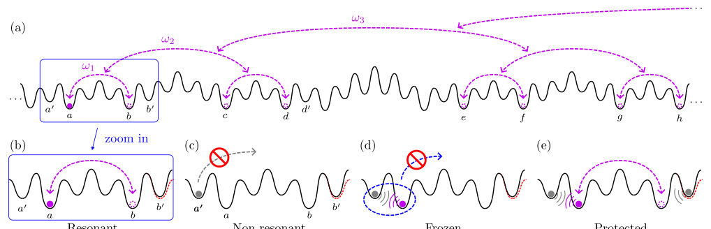
<figcaption class="paper-figure-caption"><b>Fig 1.</b> FIG. 1: Illustration of the effects of interaction on a system with hierarchical mirror structure. (a) The transport of such a system can be thought of as hierarchical oscillations between distant regions with frequencies ω1 ≫ω2 ≫ω3 ≫· · · . (b) For the lowest level of the hierarchy, if a particle is near the mirror center, it is resonant between two mirrored sites (a and b). (c) Further away from the mirror center, the particle becomes non-resonant due to a small asymmetry between sites a′ and b′ (red dashed line). (d) When the particles in (b) and (c) are both present, the non-resonant particle causes the resonant particle to become frozen due to interaction. (e) When two mirror-symmetric...</figcaption>
</figure>
<figure class="paper-figure-card">
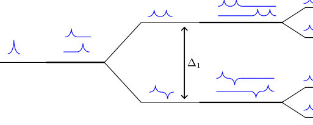
<figcaption class="paper-figure-caption"><b>Fig 2.</b> FIG. 2: (a) Iterative construction of the single-particle all-resonant HMS model in Sec. III A, modeling the purple particle in Fig. 1(a). (b) The spectrum (black) and energy eigenstates (blue), corresponding stepwise with (a).</figcaption>
</figure>
<figure class="paper-figure-card">
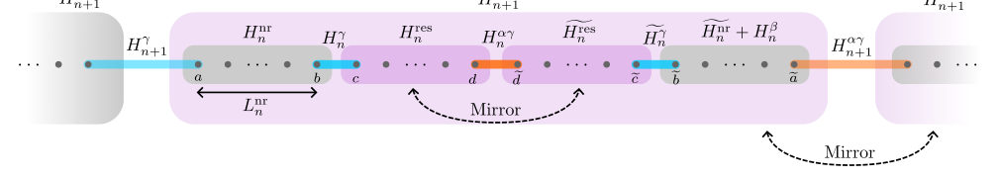
<figcaption class="paper-figure-caption"><b>Fig 3.</b> FIG. 3: Recursive construction of the solvable models, which works for both single-particle and many-body versions. At each step, Hres n+1 is formed by making a mirrored copy of Hres n (the resonant region), adding a pair of new segments Hnr n , g Hnr n with small symmetry-breaking terms Hβ n (the non-resonant region), and finally coupling the four segments by bonds Hγ n, Hαγ n , f Hγ n which are weaker and weaker as n →∞.</figcaption>
</figure>
<figure class="paper-figure-card">
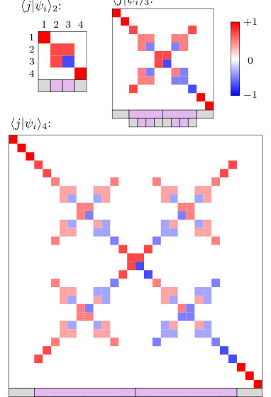
<figcaption class="paper-figure-caption"><b>Fig 4.</b> FIG. 4: Visualization of the eigenstates and their labeling of Hres n with Lres 1 = 1, Lnr n = n. The (i, j) entry of the matrix is ⟨j|ψi⟩n, assuming all error bounds are negligible. The figure is for illustrative purposes and not plotted from numerical data. The hierarchical structure is indicated at the bottom of the matrix, with magenta (gray) being (non-) resonance regions.</figcaption>
</figure>
<figure class="paper-figure-card">
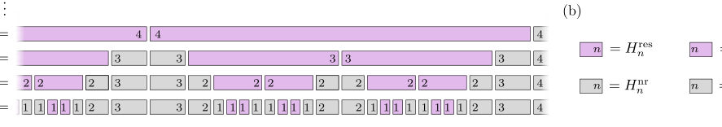
<figcaption class="paper-figure-caption"><b>Fig 5.</b> FIG. 5: Progressive approximations of the solvable model on an infinite lattice, which works for both single-particle and many- body versions. The Hamiltonian H∞ n at each step is a sum of decoupled segments. In the limit of n →∞, H∞ n converges to the final model H∞(in the sense of operator norm in the single-particle case, and term-wise in the many-body case).</figcaption>
</figure>
</div>

<p><strong>Summary.</strong> This work constructs an exactly solvable model of an interacting spin chain exhibiting a hierarchical mirror structure. It identifies two distinct many-body phases separated by a finite-temperature transition, suggesting a thermodynamic mobility edge in short-range systems. The findings challenge existing beliefs about localization and rare regions in quasiperiodic quantum matter.</p>
<p><strong>Why it may be interesting.</strong> It directly addresses critical phenomena in interacting quantum systems, extending concepts from MBL theory to deterministic structures and proposing novel phase transitions like the thermodynamic mobility edge.</p>
<details>
<summary>Detailed structure</summary>
<p><strong>Main problem.</strong> Investigating many-body critical phases beyond standard Many-Body Localization (MBL) by studying resonances arising from the underlying potential structure in deterministic, quasiperiodic systems.</p>
<p><strong>Main result.</strong> The authors derive two distinct thermodynamic phases separated by a finite-temperature phase transition corresponding to a mobility edge, and suggest delocalized rare regions can exist even without low-disorder impurities.</p>
<p><strong>Method.</strong> Construction of an asymptotically solvable model for a 1D interacting spin chain using the concept of Hierarchical Mirror Structure (HMS) and analyzing ETH satisfaction/violation in the thermodynamic limit.</p>
<p><strong>Model / system.</strong> A one-dimensional nearest-neighbor interacting spin chain with a spatial structure inducing a hierarchy of mirror-like many-body resonances. The analysis also relates to the Aubry-André model.</p>
<p><strong>Key observables.</strong> Weak Eigenstate Thermalization Hypothesis (ETH) satisfaction/violation; existence and nature of rare eigenstates (many-body scars and inverted scars); thermodynamic mobility edge.</p>
<p><strong>Important parameters / regimes.</strong> Temperature, system size (thermodynamic limit), structural parameters defining the HMS hierarchy ($\Delta\phi_n$).</p>
<p><strong>Assumptions / limitations.</strong> The model is constructed to be asymptotically solvable; analysis relies on separating transport timescales across different levels of the resonance hierarchy.</p>
<p><strong>Figures summary.</strong> Figure 1 illustrates how interactions affect an HMS system, showing hierarchical oscillations, resonance at low levels, and protection mechanisms that can lead to freezing or delocalization.</p>
<p><strong>Paper structure.</strong> The paper first establishes the structural basis using the HMS concept derived from single-particle spectral analysis ($\mu_{sc}$), then constructs the asymptotically solvable interacting model, analyzes the resulting two phases (MBC-E/MBC-L) and their separation by a mobility edge, and finally discusses implications for quasiperiodic models.</p>
</details>
<details>
<summary>Abstract</summary>
<p>While the prethermal regime of random many-body localized (MBL) systems is dominated by accidental many-body resonances, another class of resonances, originating from the underlying potential structure, is expected in large-size deterministic systems. It is known that this class of resonances can lead to single-particle critical phases that are neither localized nor extended, but the consequences in interacting systems remain unclear. In this work, we construct an asymptotically solvable model of a one-dimensional nearest-neighbor interacting spin chain, whose spatial structure induces a hierarchy of mirror-like many-body resonances. We derive two phases in the thermodynamic limit, characterized by the satisfaction and violation of a version of the weak eigenstate thermalization hypothesis (ETH). While these two phases are similar to the usual MBL and ETH phases, there exist rare eigenstates that behave like the opposite phase, interpreted as many-body scars and inverted scars. Surprisingly, the two phases can be separated by a finite-temperature phase transition, corresponding to a thermodynamic many-body mobility edge, which was often believed to be impossible. Our results also suggest the existence of delocalized rare regions in an otherwise-localized interacting Aubry-André model, even if there are no low-disorder regions like those in random systems. This challenges the common belief that there is no avalanche instability in quasiperiodic MBL.</p>
</details>
<p><sub><a href="#top">↑ back to top</a></sub></p>

<p><a id="paper-2608.00830"></a></p>
<h3 id="measurement-based-loss-tolerance-in-graph-gkp-codes-through-syndrome-resolved-pauli-frame-decoding"><a href="http://arxiv.org/abs/2608.00830v1">Measurement-Based Loss Tolerance in Graph-GKP Codes through Syndrome-Resolved Pauli-Frame Decoding</a></h3>
<p><strong>Authors:</strong> Seid Koudia, Symeon Chatzinotas<br>
<strong>Type:</strong> theory · <strong>Category:</strong> quantum information and computing · <strong>PDF:</strong> <a href="https://arxiv.org/pdf/2608.00830v1">https://arxiv.org/pdf/2608.00830v1</a><br>
<strong>Analysis basis:</strong> full PDF text, analyzed in chunks
<strong>Topic relevance:</strong> 🔥 <code>quantum measurements</code> <strong>4/5</strong> · <code>measurement-induced transitions</code> <strong>3/5</strong> · <code>methods for driven-dissipative</code> <strong>3/5</strong> · <code>Keldysh / 2PI / non-Gaussian methods</code> <strong>1/5</strong> · <code>correlated / nonlocal dissipation</code> <strong>1/5</strong> · <code>driven-dissipative phase transition</code> <strong>1/5</strong> · <code>entanglement &amp; information structure</code> <strong>1/5</strong></p>
<div class="figure-strip-hint">↔ Scroll figures horizontally</div>
<div class="paper-figures-scroll">
<figure class="paper-figure-card">
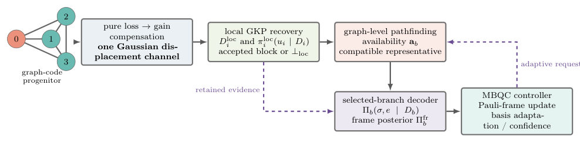
<figcaption class="paper-figure-caption"><b>Fig 1.</b> FIG. 1. Graph–GKP decoding pipeline. Pure loss followed by ideal gain compensation produces one additive Gaussian displacement channel. A local GKP recovery converts its continuous syndrome into a Pauli posterior and, at low confidence, a located decoder erasure ⊥loc. The resulting availability record restricts the quotient only for graph representative selection. Physical error weights use the full static lattice and the joint selected-branch likelihood, which is then pushed to the MBQC Pauli frame.</figcaption>
</figure>
<figure class="paper-figure-card">
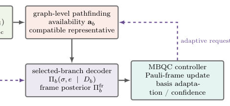
<figcaption class="paper-figure-caption"><b>Fig 2.</b> Figure 2 shows both the branch restriction produced by a local abstention and the magic-assisted equatorial interface. Thus an X-frame bit reverses the angle and a Z-frame bit flips the reported outcome. The uncer- tain physical contribution to this frame is obtained from the posterior in Sec. V C; it must not be replaced by a hard local decision before the teleportation branch is decoded. The Pauli and equatorial cases share the same decoder-conditioned search and differ only in their termi- nal interface.</figcaption>
</figure>
<figure class="paper-figure-card">
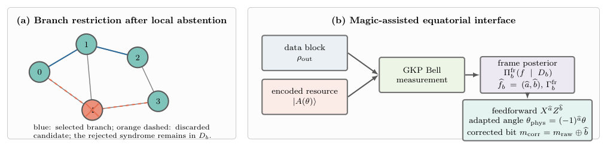
<figcaption class="paper-figure-caption"><b>Fig 3.</b> FIG. 2. Decoder-conditioned branch restriction and non-Pauli terminal interface. (a) A locally ambiguous block is converted to ⊥loc before the outer graph measurements, so candidates requiring that block are removed, while its rejected local syndrome remains in the global record. (b) An encoded non-Gaussian resource and a GKP Bell measurement implement the equatorial interface. The posterior frame controls the future angle and reported bit. The numerical A(θ) benchmarks treat this terminal resource ideally and evaluate the surrounding transport and frame layer.</figcaption>
</figure>
<figure class="paper-figure-card">
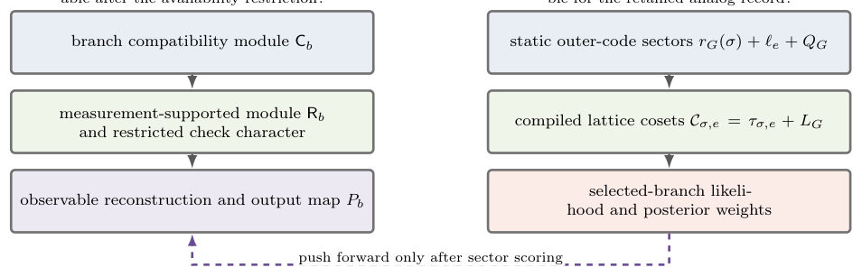
<figcaption class="paper-figure-caption"><b>Fig 4.</b> FIG. 3. Observable compatibility is not physical-error compatibility. The branch word b restricts the quotient modules used to reconstruct the observable and the measured syndrome character. Physical errors are classified by the full outer-code partition rG(σ) + ℓe + QG, compiled into static LG cosets, and only then pushed forward through Pb.</figcaption>
</figure>
<figure class="paper-figure-card">
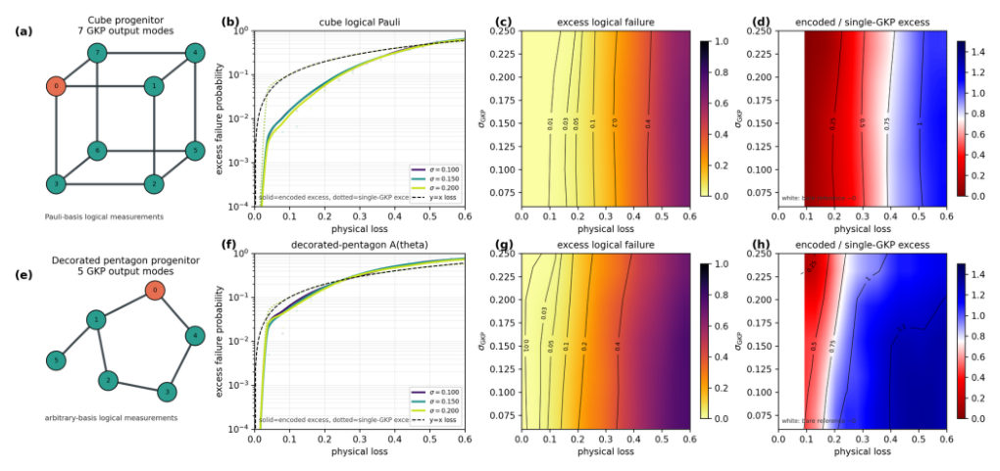
<figcaption class="paper-figure-caption"><b>Fig 5.</b> FIG. 4. Fixed-progenitor closest-coset benchmarks for square GKP blocks. Panels (a)–(d) use the seven-block cube code for logical Pauli measurements; panels (e)–(h) use the five-block decorated-pentagon code for the protected routing and frame layer surrounding an ideal supplied A(θ) terminal resource. Solid curves in (b) and (f) are encoded excess failure, dotted curves are the matched single-block GKP excess, and the dash-dotted line is the attenuation-coordinate reference. Panels (c) and (g) show encoded excess failure across (ℓ, σGKP), while (d) and (h) show the ratio of encoded to single-block excess. The coordinate ℓ= 1 −η enters through the Gaussian loss–amplification covariance;...</figcaption>
</figure>
</div>

<p><strong>Summary.</strong> This work introduces a comprehensive framework to manage resource loss in measurement-based quantum computing using Graph-GKP codes. It unifies the control mechanisms of graph stabilizers and continuous bosonic information from GKP states. The resulting interface offers a robust, causal method for fault tolerance in photonic quantum repeaters.</p>
<p><strong>Why it may be interesting.</strong> It provides advanced theoretical tools for handling realistic noise (loss) in photonic quantum computation, which is crucial for scaling up quantum networks and repeaters.</p>
<details>
<summary>Detailed structure</summary>
<p><strong>Main problem.</strong> The paper develops a unified causal framework for achieving measurement-based loss tolerance by combining graph codes with Gottesman-Kitaev-Preskill (GKP) codes.</p>
<p><strong>Main result.</strong> It establishes a 'graph-GKP interface' that provides a single, unified control layer for fault-tolerant quantum computation primitives like MBQC and photonic repeaters.</p>
<p><strong>Method.</strong> The approach involves calculating syndrome-resolved posteriors over graph branches using both accepted and rejected local measurement outcomes to guide subsequent logical operations.</p>
<p><strong>Model / system.</strong> The system is based on bosonic platforms utilizing Graph-GKP codes, modeling physical attenuation as pure loss followed by quantum-limited amplification.</p>
<p><strong>Key observables.</strong> Confidence scores for inferred Pauli classes, syndrome records, and the resulting outgoing logical Pauli frame.</p>
<p><strong>Important parameters / regimes.</strong> Squeezing levels ($\sigma$), lattice structure (square/hexagonal), and channel width ($e\sigma$).</p>
<p><strong>Assumptions / limitations.</strong> The physical process is modeled as pure loss followed by quantum-limited amplification; the use of a closest-coset approximation for decoding.</p>
<p><strong>Figures summary.</strong> Not specified in the notes, but simulations identify task-dependent loss-tolerance behavior and pseudothresholds for different GKP lattices.</p>
<p><strong>Paper structure.</strong> The paper builds from defining local GKP recovery mechanisms to calculating syndrome-resolved posteriors, culminating in a recursive concatenation structure that unifies graph decoding with lattice information flow.</p>
</details>
<details>
<summary>Abstract</summary>
<p>Graph codes offer multiple physical representatives of logical observables, while Gottesman-Kitaev-Preskill (GKP) codes retain analog information about bosonic displacement noise. We develop a causal framework that unifies these mechanisms for measurement-based loss tolerance under pure loss followed by quantum-limited amplification. In this framework, each local GKP recovery produces a refreshed logical block, a continuous syndrome record, and a confidence score for the inferred Pauli class. Low-confidence outcomes are deliberately converted into located erasures, so the availability pattern is generated directly from the bosonic data rather than sampled independently. Both accepted and rejected syndromes contribute to a syndrome-resolved posterior over the graph branch, which determines accessible logical representatives and the outgoing logical Pauli frame. We derive decoder-conditioned branch restriction, signed-outcome reconstruction, Pauli-frame updating, recursive concatenation of graph-GKP modules, and syndrome-resolved logical fusion. Numerical simulations across several squeezing levels identify task-dependent loss-tolerance behavior and finite-depth pseudothresholds for square and hexagonal GKP lattices. The resulting graph-GKP interface provides a unified causal control layer for fault-tolerant MBQC, fusion-based computation, and all-photonic repeaters.</p>
</details>
<p><sub><a href="#top">↑ back to top</a></sub></p>

<p><a id="paper-2608.01765"></a></p>
<h3 id="noise-robust-discrimination-of-incoherent-point-sources-with-spatial-mode-demultiplexing"><a href="http://arxiv.org/abs/2608.01765v1">Noise-robust discrimination of incoherent point sources with spatial-mode demultiplexing</a></h3>
<p><strong>Authors:</strong> Jian-Qiang Liu, Chao-Ning Hu, Jun Xin, Xiao-Ming Lu<br>
<strong>Type:</strong> both · <strong>Category:</strong> other · <strong>PDF:</strong> <a href="https://arxiv.org/pdf/2608.01765v1">https://arxiv.org/pdf/2608.01765v1</a><br>
<strong>Analysis basis:</strong> full PDF text, analyzed in chunks
<strong>Topic relevance:</strong> 🔥 <code>interference shaping light</code> <strong>4/5</strong> · <code>quantum measurements</code> <strong>3/5</strong> · <code>quantum optics experiment</code> <strong>3/5</strong> · <code>measurement-induced transitions</code> <strong>2/5</strong> · <code>Keldysh / 2PI / non-Gaussian methods</code> <strong>1/5</strong> · <code>driven-dissipative phase transition</code> <strong>1/5</strong></p>
<div class="figure-strip-hint">↔ Scroll figures horizontally</div>
<div class="paper-figures-scroll">
<figure class="paper-figure-card">
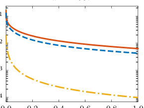
<figcaption class="paper-figure-caption"><b>Fig 1.</b> Fig. 1. Numerical results for the quantum Chernoff exponent (red solid line) and the classical Chernoff exponents for SPADE (blue dashed line) and DI (yellow dash-dotted line) with excess noise. The PSF is Gaussian with the standard deviation 𝜎= 115 𝜇m. The DI is set to 1000 pixels with a pixel size 𝑎= 4.6 𝜇m. For SPADE, only the two lowest-order HG modes are included in the calculation of the Chernoff exponent.</figcaption>
</figure>
<figure class="paper-figure-card">
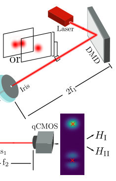
<figcaption class="paper-figure-caption"><b>Fig 2.</b> Fig. 3. Experimental setup for the SPADE-based hypothesis testing. DMD, digital micromirror device; CGH, computer-generated hologram; SLM, spatial light modulator. Only the first-order diffraction from the SLM is directed to the CMOS camera.</figcaption>
</figure>
<figure class="paper-figure-card">
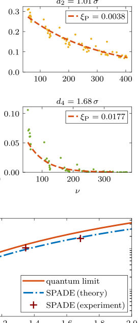
<figcaption class="paper-figure-caption"><b>Fig 3.</b> Fig. 4. Error probability and Chernoff exponent of SPADE-based hypothesis testing. The noise-to-signal ratio in this experiment is 𝑏/𝜈≈0.11. The first four panels show the error probability 𝑃err of SPADE as a function of 𝜈for the separations 𝑑1 = 0.67𝜎, 𝑑2 = 1.01𝜎, 𝑑3 = 1.35𝜎, and 𝑑4 = 1.68𝜎, respectively. The solid lines are fits to 𝑃err ∝exp(−𝜈𝜉P), with 𝜉P the extracted Chernoff exponent. The bottom panel shows the extracted Chernoff exponent 𝜉P as a function of the separation 𝑑.</figcaption>
</figure>
</div>

<p><strong>Summary.</strong> This paper develops a theoretical and experimental method for distinguishing between one or two closely spaced incoherent light sources in noisy environments. By employing reduced Spatial-Mode Demultiplexing (SPADE), the measurement concentrates source information into specific spatial modes. This technique significantly enhances noise robustness, allowing detection performance to approach the quantum limit even when significant background noise is present.</p>
<p><strong>Why it may be interesting.</strong> This work is highly relevant to quantum optics and open quantum systems because it provides a concrete, quantifiable advantage of using structured measurements (spatial modes) over simple intensity measurements when background noise corrupts the signal, pushing detection towards fundamental quantum limits.</p>
<details>
<summary>Detailed structure</summary>
<p><strong>Main problem.</strong> The core problem is discriminating between a single incoherent point source and two closely spaced incoherent point sources when background noise is present, especially in regimes where diffraction causes signal overlap.</p>
<p><strong>Main result.</strong> Reduced Spatial-Mode Demultiplexing (SPADE) measurements are theoretically predicted and experimentally shown to be robust against background noise, consistently outperforming direct imaging methods by concentrating source information into minimal detection modes.</p>
<p><strong>Method.</strong> The authors employ quantum hypothesis testing using the Chernoff exponent ($\xi$) derived from Poisson statistics for photon counts in the weak-source limit. They compare this theoretical bound against Direct Imaging (DI) measurements.</p>
<p><strong>Model / system.</strong> The system involves optical imaging of incoherent point sources, modeled using quantum detection theory and characterized by Hermite-Gaussian (HG) spatial modes. The noise is assumed to be uniform and Poissonian background light.</p>
<p><strong>Key observables.</strong> Chernoff exponent ($\xi_{	ext{meas}}$ or $\zeta$), which quantifies the exponential decay rate of the error probability, and the comparison between SPADE vs. DI performance.</p>
<p><strong>Important parameters / regimes.</strong> Background-to-signal photon ratio (e.g., 0.11), source separation ($d$), and the number of lowest-order HG modes used for measurement.</p>
<p><strong>Assumptions / limitations.</strong> The background noise is assumed to be uniform and Poissonian, and the PSF is approximated by a Gaussian function in the weak-source limit.</p>
<p><strong>Figures summary.</strong> Figures compare quantum vs. classical Chernoff exponents for SPADE and DI with excess noise; one figure shows the experimental setup for SPADE hypothesis testing; another presents $P_{err}$ versus signal photon number ($
u$) demonstrating superior performance of reduced SPADE.</p>
<p><strong>Paper structure.</strong> The paper establishes a theoretical framework using quantum state analysis and Chernoff bounds. It derives the optimal measurement strategy (SPADE) and compares its achievable exponent against direct imaging, culminating in experimental validation showing noise robustness.</p>
</details>
<details>
<summary>Abstract</summary>
<p>We theoretically predict and experimentally demonstrate that a reduced spatial-mode demultiplexing (SPADE) measurement using only the two lowest-order Hermite-Gaussian modes exhibits remarkable robustness against background noise in discriminating between a single source and two incoherent point sources. We establish a theoretical framework incorporating uniform background noise and derive an analytical Chernoff exponent expression, showing that SPADE consistently outperforms direct imaging (DI) across all source separations. Experimental results confirm that SPADE-based hypothesis testing approaches the quantum limit even when the background-to-signal photon ratio per pixel is 0.11. This advantage stems from SPADE's ability to concentrate source information into minimal detection modes, reducing the cumulative background noise impact. Our findings provide a practical detection scheme for applications where background noise is inevitable, such as astronomical observations and quantum sensing.</p>
</details>
<p><sub><a href="#top">↑ back to top</a></sub></p>

<p><a id="paper-2608.02490"></a></p>
<h3 id="high-dimensional-quantum-process-tomography-with-undetected-photons"><a href="http://arxiv.org/abs/2608.02490v1">High-dimensional quantum process tomography with undetected photons</a></h3>
<p><strong>Authors:</strong> Salini Rajeev, Mayukh Lahiri<br>
<strong>Type:</strong> theory · <strong>Category:</strong> quantum information and computing · <strong>PDF:</strong> <a href="https://arxiv.org/pdf/2608.02490v1">https://arxiv.org/pdf/2608.02490v1</a><br>
<strong>Analysis basis:</strong> full PDF text, analyzed in chunks
<strong>Topic relevance:</strong> 🔥 <code>interference shaping light</code> <strong>4/5</strong> · <code>quantum measurements</code> <strong>3/5</strong> · <code>quantum optics experiment</code> <strong>3/5</strong> · <code>QC/QI experiment</code> <strong>1/5</strong> · <code>measurement-induced transitions</code> <strong>1/5</strong> · <code>methods for driven-dissipative</code> <strong>1/5</strong></p>
<div class="figure-strip-hint">↔ Scroll figures horizontally</div>
<div class="paper-figures-scroll">
<figure class="paper-figure-card">
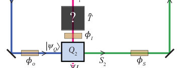
<figcaption class="paper-figure-caption"><b>Fig 1.</b> FIG. 1. Quantum process tomography scheme. There are two identical sources, Q1 and Q2, individually emitting a signal- idler pair in a high-dimensional Bell state. Idler beam, I1, is sent through Q2 and perfectly aligned with idler beam I2. This alignment induces coherence between signal beams S1 and S2. Consequently, a single-photon interference pattern is created when S1 and S2 are superposed by a beamsplit- ter (BS2) and one of the outputs is detected after projecting the signal photon onto a chosen mode. An unknown high- dimensional operation ( bT ) acts on the idler photon in beam I1. Applying a suitable unitary transformation (bU) in one of the signal beams, the unknown operation can...</figcaption>
</figure>
<figure class="paper-figure-card">
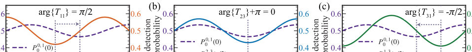
<figcaption class="paper-figure-caption"><b>Fig 2.</b> FIG. 2. Reconstruction of a non-unitary operator is illustrated using the matrix elements T11, T23, and T31. (a) The visibility of the interference pattern P 0,1 1 (θ = 0) gives |T11| = 0.16. The phase difference between P 0,1 0 (θ = 0) and P 0,1 1 (θ = 0) gives arg{T11} = π/2. (b) The visibility of P 2,3 2 (θ = π/2) gives |T23| = 0.14. A phase comparison between P 0,1 0 (θ = 0) and P 2,3 2 (θ = π/2) yields arg{T23}+ π = 0, which implies that arg{T23} = −π. (c) The visibility of P 1,3 3 (θ = π/2) gives |T31| = 0.18 and phase comparison with P 0,1 0 (θ = 0) shows that arg{T31} = −π/2.</figcaption>
</figure>
</div>

<p><strong>Summary.</strong> The paper presents a novel Quantum Process Tomography technique for high-dimensional qudits using photons. Instead of measuring the output state directly, it reconstructs an unknown process by analyzing interference patterns generated between two paths. This method is powerful because it allows full characterization without performing any measurement on the photon acted upon by the unknown operator.</p>
<p><strong>Why it may be interesting.</strong> This work provides an elegant measurement-free characterization technique for quantum channels, which is crucial for validating complex photonic quantum hardware where destructive measurements are undesirable or impossible.</p>
<details>
<summary>Detailed structure</summary>
<p><strong>Main problem.</strong> The goal is to fully characterize an arbitrary linear quantum operation ($\mathcal{E}$) acting on a high-dimensional photonic qudit without performing any direct measurement on the output state.</p>
<p><strong>Main result.</strong> A method is proposed that reconstructs all matrix elements of the unknown process $\mathbf{b}_T$ by measuring single-photon interference patterns generated through an auxiliary, known unitary transformation ($\mathbf{b}_U$).</p>
<p><strong>Method.</strong> The reconstruction relies on analyzing the sinusoidal variation of the single-photon detection probability ($P_d$) as a function of a tunable interferometric phase ($\varphi_{in}$). By systematically varying $\mathbf{b}_U$, all necessary information about $\mathbf{b}_T$ can be extracted.</p>
<p><strong>Model / system.</strong> The system uses photonic qudits encoded in Orbital Angular Momentum (OAM) states. The process involves an unknown non-unitary operator ($\mathbf{b}_T$) acting on one photon path, while a known unitary operator ($\mathbf{b}_U$) acts on another, allowing for interference measurements.</p>
<p><strong>Key observables.</strong> Single-photon detection probability ($P_d$), visibility ($V$), and the phase shifts observed in the interference patterns.</p>
<p><strong>Important parameters / regimes.</strong> The dimensionality $N$ of the qudit space; the tunable interferometric phase $\varphi_{in}$.</p>
<p><strong>Assumptions / limitations.</strong> The method assumes that quantum interference by path identity makes which-path information unavailable for the signal photon, and it relies on specific field operator transformations to handle non-unitary operations.</p>
<p><strong>Figures summary.</strong> Figure 1 illustrates the general QPT scheme using a Zou-Wang-Mandel interferometer. Figure 2 demonstrates the retrieval of specific matrix elements ($T_{11}, T_{23}, T_{31}$) by analyzing interference patterns and visibilities.</p>
<p><strong>Paper structure.</strong> The paper first defines the problem in high dimensions, details the interferometric setup using two sources and path splitting, derives the dependence of $P_d$ on phases (Chunk 1), and then systematically outlines a protocol to determine all matrix elements by varying $\mathbf{b}_U$ pairs (Chunk 2).</p>
</details>
<details>
<summary>Abstract</summary>
<p>The goal of quantum process tomography is to fully characterize an operation performed on a quantum state. By considering high-dimensional quantum states (qudit), we show that it is possible to fully reconstruct an arbitrary operation without performing any measurement on the transformed qudit. Our method is interferometric and conceptually different from existing techniques of quantum process tomography that must perform a measurement on the transformed qudit.</p>
</details>
<p><sub><a href="#top">↑ back to top</a></sub></p>

<p><a id="paper-2608.02130"></a></p>
<h3 id="unconditionally-successful-quantum-time-marching-algorithm-via-lcu-for-nonlinear-burgers-equation"><a href="http://arxiv.org/abs/2608.02130v1">Unconditionally successful quantum Time-Marching algorithm via LCU for nonlinear Burgers equation</a></h3>
<p><strong>Authors:</strong> Niccolo Fonio, Giuseppe Di Molfetta, Pierre Sagaut<br>
<strong>Type:</strong> theory · <strong>Category:</strong> quantum information and computing · <strong>PDF:</strong> <a href="https://arxiv.org/pdf/2608.02130v1">https://arxiv.org/pdf/2608.02130v1</a><br>
<strong>Analysis basis:</strong> full PDF text, analyzed in chunks
<strong>Topic relevance:</strong> 🔥 <code>quantum measurements</code> <strong>4/5</strong> · <code>measurement-induced transitions</code> <strong>3/5</strong> · <code>methods for driven-dissipative</code> <strong>3/5</strong> · <code>non-equilibrium dynamics</code> <strong>2/5</strong> · <code>driven-dissipative phase transition</code> <strong>1/5</strong></p>
<div class="figure-strip-hint">↔ Scroll figures horizontally</div>
<div class="paper-figures-scroll">
<figure class="paper-figure-card">
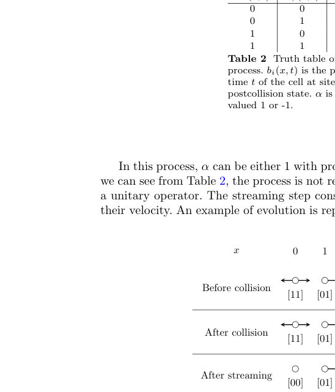
<figcaption class="paper-figure-caption"><b>Fig 1.</b> Fig. 3 Example of classical evolution [32]. The collision takes place at x = 1, 3, 4, with different random extractions for α. All the other cells are not affected by the collision. The streaming takes place according to respective velocities with continuous boundary conditions.</figcaption>
</figure>
<figure class="paper-figure-card">
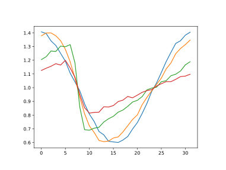
<figcaption class="paper-figure-caption"><b>Fig 2.</b> Fig. 4 Simulation of Burger’s equation with LGCA. 2048 grid points were used, ensemble-averaged over 100 realizations and space-averaged over 64 grid points. The left plot has p = 0.75, the right plot has p = 0.5. The specific dependence of the hydrodynamic parameters is partly detailed in [32].</figcaption>
</figure>
</div>

<p><strong>Summary.</strong> The paper presents a novel quantum algorithm to simulate nonlinear PDEs, like the Burgers equation, overcoming the critical issue of probabilistic failure inherent in current time-marching quantum solvers. By adapting quantum lattice gas automata and utilizing LCU conjugation, they achieve an unconditionally successful simulation framework for these complex dynamics.</p>
<p><strong>Why it may be interesting.</strong> This work provides a concrete algorithmic breakthrough by solving the major hurdle of probabilistic failure in quantum simulation of nonlinear dynamics, which is crucial for simulating complex many-body or fluid systems.</p>
<details>
<summary>Detailed structure</summary>
<p><strong>Main problem.</strong> Developing an unconditionally successful quantum Time-Marching (TM) algorithm for solving nonlinear Partial Differential Equations (PDEs), such as the Burgers equation.</p>
<p><strong>Main result.</strong> The authors demonstrated a method using quantum lattice gas algorithms that allows time steps to be concatenated without probabilistic failure, achieving unconditional success for simulating nonlinearities.</p>
<p><strong>Method.</strong> The approach leverages Linear Combination of Unitaries (LCU) circuits to implement non-unitary evolution arising from measurement outcomes in a quantum lattice gas cellular automaton model.</p>
<p><strong>Model / system.</strong> The simulation targets the 1D Burgers' equation using a Lattice Gas Cellular Automata (LGCA) model. The method is compared against standard finite difference discretizations for advection equations.</p>
<p><strong>Key observables.</strong> Success probability ($p_m$) of measurement outcomes, and the resulting non-unitary operators ($A_0, A_1$).</p>
<p><strong>Important parameters / regimes.</strong> The relative phases ($\alpha, eta$) used to modify LGCA collision operators to satisfy necessary conjugation conditions.</p>
<p><strong>Assumptions / limitations.</strong> The core assumption is that exploiting the correspondence between quantum measurement stochasticity and classical lattice gas randomness allows for unconditional time-step concatenation. A key limitation noted is that simple FDM schemes fail due to encoding not being phase-independent.</p>
<p><strong>Figures summary.</strong> Figure 1 shows the general LCU circuit diagram, Figure 2 illustrates the standard LCU circuit, and Figures 3/4 provide visualizations of the classical and quantum simulation results for Burgers' equation on a grid.</p>
<p><strong>Paper structure.</strong> The paper first establishes the challenge of probabilistic non-unitary evolution in quantum PDE solvers. It then introduces the general framework using LCU conjugation (Theorem 1). The core development applies this to LGCA operators, showing how phase modification satisfies the necessary conditions for unconditional time-marching.</p>
</details>
<details>
<summary>Abstract</summary>
<p>Most recently proposed quantum algorithms for solving linear and nonlinear partial differential equations rely on non-unitary operations. These operations are typically implemented probabilistically, requiring postselection and thus increasing the computational cost. We show that quantum lattice gas algorithms enable unconditionally successful quantum simulation of nonlinearities, yielding, to our knowledge, the first quantum algorithm for Burgers equation whose time steps can be concatenated without probabilistic failure. The key idea is to exploit the correspondence between the stochasticity of quantum measurement in the linear combination of unitaries framework and the intrinsic randomness of the classical lattice gas algorithm. In doing so, we identify general properties that characterize probabilistic classical algorithms amenable to this time-marching formulation, and illustrate the approach with an additional application.</p>
</details>
<p><sub><a href="#top">↑ back to top</a></sub></p>

<p><a id="paper-2608.01883"></a></p>
<h3 id="diodes-and-capacitors-for-the-transport-of-monopoles-in-fragmented-spin-ice"><a href="http://arxiv.org/abs/2608.01883v1">Diodes and capacitors for the transport of monopoles in fragmented spin ice</a></h3>
<p><strong>Authors:</strong> Anoop Raj, Sumiran Pujari, Ludovic D. C. Jaubert<br>
<strong>Type:</strong> theory · <strong>Category:</strong> strongly correlated electrons · <strong>PDF:</strong> <a href="https://arxiv.org/pdf/2608.01883v1">https://arxiv.org/pdf/2608.01883v1</a><br>
<strong>Analysis basis:</strong> full PDF text, analyzed in chunks
<strong>Topic relevance:</strong> 🔥 <code>analog quantum simulation</code> <strong>4/5</strong> · <code>exotic spin models in light-matter</code> <strong>3/5</strong> · <code>non-equilibrium dynamics</code> <strong>2/5</strong> · <code>Keldysh / 2PI / non-Gaussian methods</code> <strong>1/5</strong> · <code>methods for driven-dissipative</code> <strong>1/5</strong> · <code>spintronics-quantum-optics interface</code> <strong>1/5</strong></p>
<div class="figure-strip-hint">↔ Scroll figures horizontally</div>
<div class="paper-figures-scroll">
<figure class="paper-figure-card">

<figcaption class="paper-figure-caption"><b>Fig 1.</b> Figure 1: Fragmentation in spin ice and domain walls: The pyrochlore lattice is made of corner-sharing tetrahedra with four spin sublattices, one at each tetrahedron corner. The centres of all tetrahedra form a bipartite diamond lattice. (a) In a fragmented Coulomb phase, all tetrahedra are for example in a 3in-1out state on up tetrahedra (blue) and a 3out-1in state on down tetrahedra (red), defined as domain D. Flipping all spins around a closed loop of in-out-in-out... spins preserves the domain D (see green hexagon) (b) Flipping all spins in the system corresponds to domain ¯D. (c) The magnetic degrees of freedom of a 3in-1out state can be decomposed into two parts [19]: (i) a 4in,...</figcaption>
</figure>
<figure class="paper-figure-card">

<figcaption class="paper-figure-caption"><b>Fig 2.</b> Figure 2: Domain walls in fragmented spin ice: (a) Starting from a fragmented spin configuration in domain D, we define a (green) plane at layer z = ndw, orthogonal to the [001] direction. (b) Flipping all spins above this plane transforms the upper part of the system from domain D to ¯D. The domain wall is one-tetrahedron layer thick, where 3out-1in and 3in-1out states co-exist; the former (red) belong to the lower domain D, while the latter (blue) belong to upper domain ¯D.</figcaption>
</figure>
<figure class="paper-figure-card">

<figcaption class="paper-figure-caption"><b>Fig 3.</b> Figure 3: Diode effect: (a) Schematic representation of the system divided into domains D (bottom) and ¯D (top) via a domain wall at z = ndw = L/2. (b,c) Probability distribution function of the position of monopole carriers, as a function of z, during their diffusion in presence of a domain wall, for negative (b) and positive (c) charges. Simulation details are given in appendix A. (d,e) Microscopic mechanism of the diode effect. Starting from a given initial state at the domain wall, the green paths illustrates how (d) a negative charge is reflected, while (e) a positive charge can be transmitted. Coming from below, this interface is a W+ domain wall.</figcaption>
</figure>
<figure class="paper-figure-card">

<figcaption class="paper-figure-caption"><b>Fig 4.</b> Figure 4: Capacitor: (a) Schematic representation of the system with p domain walls, ensuring that positive charges can only go up while negative ones can only go down. A single pair of charges is created in the central region, and its evolution is tracked under Monte Carlo dynamics. (b) Distribution of the position of positive (blue) and negative (red) charges along the z−axis, as a function of simulation time for p = 28 domain walls and L = 256. Solid lines represent the average over all independent runs, while thin light-coloured ones correspond to individual runs. The vertical axis denotes the domain index i = {−14, ..., 0, ..., +14}. The horizontal axis is shown on a logarithmic scale....</figcaption>
</figure>
<figure class="paper-figure-card">

<figcaption class="paper-figure-caption"><b>Fig 5.</b> Figure 5: Capacitor with multiple charges: Initially, 10 pairs of charges (20 charges) are created in the central (zeroth) region. Annihilation between opposite charges is permitted but domain walls remain immobile. (a) Histogram of the number of surviving charges (Ns) at the end of simulations, for different densities of domain walls ρdw = 1</figcaption>
</figure>
</div>

<p><strong>Summary.</strong> This paper develops a theoretical framework showing how domain walls within magnetically fragmented spin ice can be engineered to function as functional components like diodes and capacitors for transporting magnetic monopoles. By leveraging the asymmetry inherent in these domain walls, the authors propose a novel method to control monopole current, opening avenues for designing quantum-like electronic devices based on frustrated magnetism.</p>
<p><strong>Why it may be interesting.</strong> The work provides a concrete, device-oriented application (diodes/capacitors) to the complex physics of emergent quasi-particles in frustrated magnets, linking topological defects (domain walls) directly to electronic functionality. This bridges fundamental condensed matter theory with solid-state device concepts.</p>
<details>
<summary>Detailed structure</summary>
<p><strong>Main problem.</strong> The primary goal is to design theoretical concepts for electronic/magnetic devices, specifically diodes and capacitors, that utilize the transport properties of magnetic monopoles in spin-ice materials.</p>
<p><strong>Main result.</strong> The authors demonstrate that domain walls formed in magnetically fragmented spin ice act as an asymmetric filter (diode) for monopole current, and successive walls can accumulate charge to form a capacitor.</p>
<p><strong>Method.</strong> The work combines theoretical proof of concept with extensive numerical simulations involving over a million spins to validate the predicted monopole transport mechanisms.</p>
<p><strong>Model / system.</strong> The system is based on spin-ice materials exhibiting magnetic fragmentation, where quasi-particles behave as magnetic monopoles. The physics incorporates long-range antiferromagnetic order leading to domain walls separating different local orders (D and $\bar{D}$).</p>
<p><strong>Key observables.</strong> Directional asymmetry of monopole current (diode effect), charge accumulation across domain walls (capacitor formation), and the resulting AC magnetic current ('magnetricity').</p>
<p><strong>Important parameters / regimes.</strong> The existence and structure of domain walls, which are crucial for inducing directional bias; the material type (e.g., pyrochlore oxides).</p>
<p><strong>Assumptions / limitations.</strong> It is assumed that the domain wall remains immobile during monopole transport simulations, allowing monopoles to pass through while establishing asymmetry.</p>
<p><strong>Figures summary.</strong> Figures illustrate the magnetic fragmentation on the lattice, showing how flipping spins creates domain walls. Subsequent figures detail the diode effect by comparing probability distributions of positive vs. negative charges crossing the interface, and show the microscopic mechanism for charge reflection or transmission.</p>
<p><strong>Paper structure.</strong> The paper establishes the physical context (monopoles in spin ice), introduces the concept of magnetic fragmentation leading to domain walls, theoretically proves that these walls act as diodes/capacitors, validates this with large-scale simulations, and concludes by discussing broader implications for other chiral or nematic spin liquids.</p>
</details>
<details>
<summary>Abstract</summary>
<p>Spin-ice materials are famous for their quasi-particle excitations that behave like magnetic monopoles. Magnetricity is the concept that these monopoles can conduct an AC magnetic current, in analogy with conduction electrons. While monopole dynamics has been intensively studied and is reasonably well understood, very little has been done to design devices in order to control magnetricity. Here we develop a theoretical proof of concept for the design of diodes and capacitors for the transport of monopoles. We use the property of systems with magnetic fragmentation, where spin-ice physics co-exists with long-range antiferromagnetic order. The key point is that magnetic order allows for the existence of domain walls. Under certain conditions of preparation, this domain wall is equivalent to an asymmetric filter for monopoles. In a given direction, positive charges can go through while negative ones are repelled; the opposite applies in the opposite direction. This asymmetry effectively functions like a diode for monopole current. Successive domain walls separate positive from negative charges with a vacuum of charge in between, producing a capacitor for monopoles. Once the capacitor is charged, it can in principle be used as a battery for monopoles. All microscopic mechanisms are explained and our proof of concept is validated by simulations of more than a million spins. Application to experiments are discussed for rare-earth pyrochlore oxides and artificial spin ice. Finally, we discuss in general terms how a domain wall in fragmented spin ice can also be seen as an emergent boundary separating two mirror "worlds" separated by time-reversal symmetry. Beyond spin ice, our work opens a promising direction of investigation for the dynamics of emergent quasi-particles crossing domain walls in chiral and nematic spin liquids, which also possess a broken symmetry.</p>
</details>
<p><sub><a href="#top">↑ back to top</a></sub></p>

<p><a id="paper-2608.01111"></a></p>
<h3 id="fault-tolerant-quantum-computing-with-a-microwave-cat-bus"><a href="http://arxiv.org/abs/2608.01111v1">Fault-tolerant quantum computing with a microwave Cat Bus</a></h3>
<p><strong>Authors:</strong> Yanyan Chen, Xinyang Yu, Yueyang Min, Zhihao Zhang, Shuaifan Cao, Xiaopeng Li<br>
<strong>Type:</strong> theory · <strong>Category:</strong> quantum information and computing · <strong>PDF:</strong> <a href="https://arxiv.org/pdf/2608.01111v1">https://arxiv.org/pdf/2608.01111v1</a><br>
<strong>Analysis basis:</strong> full PDF text, analyzed in chunks
<strong>Topic relevance:</strong> 🔥 <code>QC/QI experiment</code> <strong>4/5</strong> · <code>Tavis-Cummings &amp; cavity-many-emitter</code> <strong>3/5</strong> · <code>correlated cavity matter</code> <strong>3/5</strong> · <code>analog quantum simulation</code> <strong>1/5</strong> · <code>methods for driven-dissipative</code> <strong>1/5</strong></p>
<div class="figure-strip-hint">↔ Scroll figures horizontally</div>
<div class="paper-figures-scroll">
<figure class="paper-figure-card">

<figcaption class="paper-figure-caption"><b>Fig 1.</b> FIG. 1. A shuttling-free neutral-atom quantum processor mediated by a microwave Cat Bus. a, Bloch sphere representation of the stabilized cat-state manifold C = span{|α⟩, |−α⟩}, where logical Pauli operators are defined in the orthogonal X-basis C± α ∝(|α⟩± |−α⟩). b, Crossed-chip hardware configuration. A static 2D optical lattice traps neutral atoms between two chips containing orthogonal arrays of microwave resonators (top Y-cavities and bottom X-cavities). These resonators function as ‘Cat Buses’, mediating long-range entanglement and establishing a highly connected, shuttling-free processor geometry. c, Atomic energy level structure. Quantum information is stored in the computational...</figcaption>
</figure>
<figure class="paper-figure-card">

<figcaption class="paper-figure-caption"><b>Fig 2.</b> FIG. 2. Error characterization of the cat-atom CZ1</figcaption>
</figure>
<figure class="paper-figure-card">

<figcaption class="paper-figure-caption"><b>Fig 3.</b> FIG. 3. Cat-bus-enabled syndrome extraction and cycle-time scaling for hypergraph product (HGP) codes. a, Physical layout of a hypergraph-product (HGP) code constructed from two identical (3, 4)-biregular classical Tanner graphs. Orange sites denote data qubits in the Q1 and Q2 blocks, whereas blue and green sites denote Z- and X-check ancillas, respectively. The marked weight-7 Z check couples to four data qubits in Q1 and three in Q2, and the edge labels 1–4 indicate the four interaction layers shown in c. b, Cat-mediated atom–atom CZn gate (left) and its decomposition into the native cat–atom entangling operations of our architecture (right). By design, the cat qubit disentangles from...</figcaption>
</figure>
<figure class="paper-figure-card">

<figcaption class="paper-figure-caption"><b>Fig 4.</b> FIG. 4. Circuit-level logical performance of the Cat Bus architecture. a, Logical failure rate per syndrome- extraction cycle for the same Cat Bus circuits under the two-qubit depolarizing (D2) model and the hardware-derived (HD) Cat Bus error model. The upper axis converts the phys- ical error rate to cooperativity using p = π/ √</figcaption>
</figure>
</div>

<p><strong>Summary.</strong> The paper proposes a microwave 'Cat Bus' architecture to solve the latency bottleneck in scaling neutral-atom quantum computers. By using cavity modes stabilized as bosonic cat states, it achieves shuttling-free all-to-all connectivity and implements fast, high-fidelity one-to-many entangling gates. This results in significant improvements in syndrome extraction speed and error thresholds for fault-tolerant computation.</p>
<p><strong>Why it may be interesting.</strong> This work directly addresses scalability in neutral-atom quantum computing by proposing a novel, high-speed interconnect (the Cat Bus) that bypasses slow physical atom movement, which is crucial for realizing large-scale fault tolerance.</p>
<details>
<summary>Detailed structure</summary>
<p><strong>Main problem.</strong> The primary challenge addressed is overcoming the latency bottleneck associated with shuttling atoms in neutral-atom quantum computers to achieve scalable, fault-tolerant operation with all-to-all connectivity.</p>
<p><strong>Main result.</strong> The proposed Cat Bus architecture enables a 180-fold reduction in syndrome-extraction cycle time compared to atom rearrangement methods and increases the error threshold from 0.55% to 0.72% under depolarizing noise.</p>
<p><strong>Method.</strong> The authors develop hardware-aware scheduling schemes for syndrome extraction, benchmarking performance using Hypergraph-Product (HGP) codes against various noise models.</p>
<p><strong>Model / system.</strong> The system is a hybrid platform coupling neutral atoms trapped in a static 2D optical lattice with superconducting microwave cavities forming a 'Cat Bus.' This bus mediates entanglement via bosonic cat states, enabling shuttling-free all-to-all connectivity.</p>
<p><strong>Key observables.</strong> Syndrome-extraction cycle time (180x reduction), error threshold (0.72% to 0.80%), and logical failure rate (LFR).</p>
<p><strong>Important parameters / regimes.</strong> Cat amplitude ($\alpha$), cooperativity ($C$), physical error rates ($p$), and system size ($N=10^5$ data qubits).</p>
<p><strong>Assumptions / limitations.</strong> The analysis relies on the large-amplitude limit for cat states, assuming leading errors are dominated by cat Z errors and atomic leakage.</p>
<p><strong>Figures summary.</strong> Figures illustrate the shuttling-free processor geometry (crossed-chip setup) and show error characterization of the native CZ gate, including infidelity vs. amplitude ($\alpha$) and optimized infidelity vs. cooperativity ($C$).</p>
<p><strong>Paper structure.</strong> The paper first introduces the Cat Bus mechanism for all-to-all connectivity via a one-to-many CZ gate. It then derives the error channel and proposes hardware-aware scheduling for syndrome extraction using HGP codes, concluding with performance benchmarks comparing cycle times and error thresholds against existing methods.</p>
</details>
<details>
<summary>Abstract</summary>
<p>The scalability of fault-tolerant neutral-atom quantum computers is constrained by the latency of shuttling with optical tweezers, imposing a stringent trade-off between qubit overhead and circuit depth in quantum algorithm compilation. Here we propose a hardware-efficient, shuttling-free architecture that achieves all-to-all connectivity. Remote Rydberg atoms are resonantly entangled through a microwave ``Cat Bus''---a cavity mode autonomously stabilized in a bosonic cat state. The Cat Bus natively supports the highly parallelized execution of one-to-many $\mathrm{CZ}^n$ gates with exponentially suppressed crosstalk. We derive the resulting cat--atom error channel from the underlying interactions and physical constraints. For fault-tolerant operation, we develop a hardware-aware scheduling scheme that exploits the native cat--atom $\mathrm{CZ}^{n}$ gate to construct a syndrome-extraction circuit with minimum depth. We benchmark the architecture using hypergraph-product (HGP) codes and estimate a 180-fold reduction in syndrome-extraction cycle time at $N=10^5$ data qubits compared with an atom-rearrangement-based architecture. Under matched two-qubit depolarizing noise, the corresponding error threshold increases from $0.55\%$ to $0.72\%$. Under the hardware-derived error model, we obtain a threshold of $0.80\%$, corresponding to a threshold cooperativity of $C_{\mathrm{th}}=7.8 \times 10^4$, compatible with experimentally accessible parameters for Rydberg-coupled microwave-cavity systems. By avoiding atom transport, the Cat Bus provides a route towards high-speed, fault-tolerant neutral-atom quantum computation.</p>
</details>
<p><sub><a href="#top">↑ back to top</a></sub></p>

<p><a id="paper-2608.01124"></a></p>
<h3 id="maximal-renyi-relative-entropy-for-math291math"><a href="http://arxiv.org/abs/2608.01124v1">Maximal Rényi Relative Entropy for $α>2$</a></h3>
<p><strong>Authors:</strong> Roberto Rubboli<br>
<strong>Type:</strong> theory · <strong>Category:</strong> quantum information and computing · <strong>PDF:</strong> <a href="https://arxiv.org/pdf/2608.01124v1">https://arxiv.org/pdf/2608.01124v1</a><br>
<strong>Analysis basis:</strong> full PDF text, analyzed in chunks
<strong>Topic relevance:</strong> 🔥 <code>entanglement &amp; information structure</code> <strong>4/5</strong> · <code>Keldysh / 2PI / non-Gaussian methods</code> <strong>2/5</strong> · <code>non-equilibrium dynamics</code> <strong>2/5</strong> · <code>correlated / nonlocal dissipation</code> <strong>1/5</strong> · <code>driven-dissipative phase transition</code> <strong>1/5</strong> · <code>methods for driven-dissipative</code> <strong>1/5</strong> · <code>non-equilibrium universality</code> <strong>1/5</strong></p>
<div class="figure-strip-hint">↔ Scroll figures horizontally</div>
<div class="paper-figures-scroll">
<figure class="paper-figure-card">

<figcaption class="paper-figure-caption"><b>Fig 1.</b> FIG. 1: Minimal and maximal relative entropies evaluated for the states</figcaption>
</figure>
</div>

<p><strong>Summary.</strong> This paper fully characterizes the maximal quantum extension of Rényi relative entropies for all parameters $\alpha$, resolving an outstanding problem for $\alpha > 2$. It proves that this maximal divergence is given by a specific form, $D_{\alpha, \alpha-1}(\rho\|\sigma)$. The result has a direct application in quantifying the coherence-generating power of quantum operations.</p>
<p><strong>Why it may be interesting.</strong> This work provides fundamental mathematical tools—the complete characterization of quantum relative entropies—that underpin resource theories in quantum information, which are relevant to understanding coherence measures in open quantum systems dynamics.</p>
<details>
<summary>Detailed structure</summary>
<p><strong>Main problem.</strong> The central problem is to characterize the maximal quantum extension of classical Rényi relative entropies for all parameters $\alpha$, specifically addressing the case where $\alpha > 2$. This completes a characterization previously limited to $\alpha \in [0, 2]$.</p>
<p><strong>Main result.</strong> The paper proves that for $\alpha > 2$, the maximal quantum relative entropy is given by the $\alpha-z$ Rényi relative entropy with $z = \alpha-1$. This provides a complete characterization of both minimal and maximal extensions.</p>
<p><strong>Method.</strong> The authors use techniques involving data-processing inequalities, variational characterizations (finding upper bounds), and establishing lower bounds through constructions involving quantum channels and state preparations to prove the required equalities/inequalities.</p>
<p><strong>Model / system.</strong> The analysis is performed on general quantum states ($\rho, \sigma$) defined on a Hilbert space $A$, relating them to classical probability distributions ($p, q$). The framework involves studying various regularized relative entropy divergences (measured and prepared).</p>
<p><strong>Key observables.</strong> Rényi relative entropies ($D_\alpha$), minimal/maximal quantum extensions of these entropies, and the coherence-generating power quantified by divergence inequalities.</p>
<p><strong>Important parameters / regimes.</strong> The parameter $\alpha$ defining the Rényi entropy is crucial, with distinct results found for $\alpha \in [0, 1/2)$, $\alpha \geq 1/2$, $\alpha \in [0, 2]$, and finally $\alpha > 2$.</p>
<p><strong>Assumptions / limitations.</strong> The analysis relies on the additivity of regularized quantities in the limit $n\to\infty$ and the faithfulness of the relative entropy for all relevant parameters.</p>
<p><strong>Figures summary.</strong> Figure 1 illustrates that the maximal relative entropy switches to the form $D_{\alpha, \alpha-1}$ when $\alpha > 2$, confirming the theoretical result.</p>
<p><strong>Paper structure.</strong> The paper systematically builds the characterization by first reviewing known results for minimal extensions. It then tackles the maximal extension, proving the necessary and sufficient conditions for state transformations (coherence generation) using established inequalities derived from data processing and convexity arguments across different $\alpha$ regimes.</p>
</details>
<details>
<summary>Abstract</summary>
<p>Quantum relative entropies play a fundamental role in quantum information theory. In the classical setting, Rényi relative entropies constitute, up to linear combinations, the most general class of relative entropies, naturally motivating the search for their minimal and maximal quantum extensions. The minimal extension is known to be the reverse sandwiched Rényi relative entropy for $α\in[0,1/2)$ and the sandwiched Rényi relative entropy for $α\geq 1/2$. In contrast, the maximal extension had previously been identified only for $α\in[0,2]$, where it is given by the geometric Rényi relative entropy. In this work, we complete this characterization by proving that for $α>2$, the maximal extension is given by the $α$-$z$ Rényi relative entropy with $z=α-1$. As an application, we determine when an energy-incoherent state can be transformed into an energy-coherent state by a Gibbs-preserving operation assisted by an uncorrelated catalyst, thereby fully characterizing the coherence-generating power of this class of operations in the catalytic setting.</p>
</details>
<p><sub><a href="#top">↑ back to top</a></sub></p>

<p><a id="paper-2608.01478"></a></p>
<h3 id="surface-adsorbates-suppress-low-frequency-noise-for-shallow-nitrogen-vacancy-centers"><a href="http://arxiv.org/abs/2608.01478v1">Surface adsorbates suppress low-frequency noise for shallow nitrogen-vacancy centers</a></h3>
<p><strong>Authors:</strong> Zhiyang Yuan, David A. Fehr, Kalliope Zervas, Sorawis Sangtawesin, Lila V. H. Rodgers, Patryk Gumann, Michael E. Flatte, Nathalie P. de Leon<br>
<strong>Type:</strong> experiment · <strong>Category:</strong> quantum information and computing · <strong>PDF:</strong> <a href="https://arxiv.org/pdf/2608.01478v1">https://arxiv.org/pdf/2608.01478v1</a><br>
<strong>Analysis basis:</strong> full PDF text, analyzed in chunks
<strong>Topic relevance:</strong> 🔥 <code>QC/QI experiment</code> <strong>4/5</strong> · <code>spintronics-quantum-optics interface</code> <strong>3/5</strong> · <code>correlated / nonlocal dissipation</code> <strong>1/5</strong> · <code>methods for driven-dissipative</code> <strong>1/5</strong> · <code>quantum measurements</code> <strong>1/5</strong></p>
<div class="figure-strip-hint">↔ Scroll figures horizontally</div>
<div class="paper-figures-scroll">
<figure class="paper-figure-card">

<figcaption class="paper-figure-caption"><b>Fig 1.</b> FIG. 1. (a) Schematic of a near-surface nitrogen-vacancy (NV) center in diamond. Under ambient (air) conditions, the diamond surface is covered by adsorbates such as water and hydrocarbons, whereas under ultra-high vacuum (UHV) conditions, these adsorbates are removed via low-temperature annealing, leaving a clean surface. (b) Hahn echo coherence time T2 measured for the same NV center in air (blue) and in UHV (orange), showing a 4.6× longer T2 in air. The bias magnetic field is 420 G and is aligned with the NV axis. (c) Ratio of T2 measured in air to that in UHV for eight NV centers, plotted as a function of NV depth. The depths are independently calibrated via proton NMR measurements in...</figcaption>
</figure>
<figure class="paper-figure-card">

<figcaption class="paper-figure-caption"><b>Fig 2.</b> FIG. 2. (a) Energy level diagram of the ground-state electronic spin of the negatively charged NV center, indicating the two microwave-driven transitions. Magnetic field noise along the NV axis shifts the ms = +1 and ms = −1 levels in opposite direc- tions, whereas electric field noise shifts them in the same direction. (b) Pulse sequences for Hahn echo coherence measurements in the single-quantum (SQ) and double-quantum (DQ) bases. In the SQ protocol, the coherence of the superposition between ms = 0 and ms = −1 is probed. In the DQ protocol, a superposition between ms = +1 and ms = −1 is generated using two microwave tones, as the direct transition between these states is forbidden. Red...</figcaption>
</figure>
<figure class="paper-figure-card">

<figcaption class="paper-figure-caption"><b>Fig 3.</b> FIG. 3. (a) Dynamical decoupling measurements of NV co- herence using sequences with varying numbers of π pulses, performed on NV5 in air under an applied magnetic field of 420 G. (b) Extracted T2 coherence times as a function of the number of π pulses, demonstrating the extension of coherence with increasing π pulse numbers. Example data from two NV centers measured in air and in UHV are shown. Dashed lines are fits to power-law scaling, yielding exponents of 0.52±0.02 (air, NV5), 0.55±0.02 (air, NV141), 0.44±0.02 (UHV, NV5), and 0.36 ± 0.01 (UHV, NV141). (c,d) Noise spectra obtained via spectral decomposition of the dynamical decoupling data in air and in UHV for NV5 (c) and NV152 (d). In...</figcaption>
</figure>
<figure class="paper-figure-card">

<figcaption class="paper-figure-caption"><b>Fig 4.</b> FIG. 4. (a) Energy level diagram of the NV center spin states, indicating SQ and DQ relaxation transitions, with cor- responding rates Ωand γ. (b) Pulse sequences for SQ and DQ relaxation measurements. In the SQ (DQ) protocol, the NV spin is initialized in the ms = 0 (ms = −1) state, and the re- laxation to the ms = −1 (ms = +1) state is measured. (c,d) Comparison of SQ T1 (c) and DQ T1 (d) in UHV and in air for the same NV center; data (points) are fitted to exponen- tial functions (lines). These measurements are performed at a magnetic field of 18 G. (e) SQ and DQ T1 as a function of NV depth in UHV and in air, showing shorter SQ T1 but longer DQ T1 in UHV. (f) Decomposed SQ (Ω) and DQ...</figcaption>
</figure>
<figure class="paper-figure-card">

<figcaption class="paper-figure-caption"><b>Fig 5.</b> FIG. 5. (a) Confocal scan of a diamond sample acquired under ambient conditions. (b) Confocal scan of the same region acquired under UHV. NV centers are labeled by index, with the measured depth indicated in parentheses (in nm). The excitation laser power is 0.56 mW in air and 1.31 mW in UHV. Several shallow NV centers (e.g., NV3, NV16, and NV21) become undetectable in the UHV scan.</figcaption>
</figure>
</div>

<p><strong>Summary.</strong> The research investigates how surface adsorbates dictate the coherence of NV centers in diamond by comparing measurements in air versus UHV. While initial $T_2$ data suggests adsorbates are crucial, detailed analysis shows that low-frequency noise arises from surface charge compensated by these molecules. This work provides a nuanced understanding of environmental coupling essential for building reliable quantum sensors.</p>
<p><strong>Why it may be interesting.</strong> This work provides critical experimental data on environmental coupling in solid-state qubits. The ability to spectroscopically distinguish between electric and magnetic noise sources using DQ measurements is highly valuable for designing robust quantum memories.</p>
<details>
<summary>Detailed structure</summary>
<p><strong>Main problem.</strong> The primary goal is understanding how surface adsorbates limit the coherence time ($T_2$) of shallow Nitrogen-Vacancy (NV) centers in diamond, a key quantum sensor.</p>
<p><strong>Main result.</strong> Removing adsorbates by moving to Ultra-High Vacuum (UHV) significantly reduces $T_2$ ($\sim 4	imes$), but analyzing different relaxation channels reveals that the low-frequency noise is linked to surface charge compensated by adsorbates in ambient air.</p>
<p><strong>Method.</strong> The study uses advanced Electron Spin Resonance (ESR) techniques, including Hahn echo measurements ($T_2$) in both Single-Quantum (SQ) and Double-Quantum (DQ) bases, alongside longitudinal relaxation ($T_1$) measurements, comparing results between ambient air and UHV.</p>
<p><strong>Model / system.</strong> The physical system is a shallow NV center embedded in diamond. The analysis involves separating decoherence contributions into electric and magnetic noise components by utilizing the distinct sensitivities of SQ and DQ spin measurements.</p>
<p><strong>Key observables.</strong> $T_2$ coherence time, $T_1$ relaxation times, relative contributions of electric vs. magnetic noise, and noise spectral density power-law exponents ($\alpha$).</p>
<p><strong>Important parameters / regimes.</strong> The comparison between ambient air and UHV conditions; the frequency regimes (e.g., $\sim 100 	ext{ MHz}$ for $T_1$); and the depth dependence of the noise components.</p>
<p><strong>Assumptions / limitations.</strong> The observed changes in coherence are directly attributable to the presence or removal of surface adsorbates, which modify the local electric field environment.</p>
<p><strong>Figures summary.</strong> Figures compare $T_2$ measurements (Air vs UHV) showing a large difference; they also detail the decomposition of decoherence rates into electric and magnetic parts across different depths and show $T_1$ comparisons between bases in both environments.</p>
<p><strong>Paper structure.</strong> The paper systematically compares NV center coherence under ambient versus UHV conditions, uses SQ/DQ measurements to separate noise sources (E vs B), analyzes depth scaling of these noise components, and contrasts the findings from $T_2$ with those from $T_1$.</p>
</details>
<details>
<summary>Abstract</summary>
<p>Shallow nitrogen-vacancy (NV) centers in diamond are promising nanoscale quantum sensors, yet their coherence is strongly limited by surface-induced noise. Surface adsorbates are widely believed to be a major source of decoherence. Here, we test this assumption by characterizing shallow single NV centers under ultrahigh vacuum (UHV) conditions, where the diamond surface is kept free of adsorbates, and comparing their behavior to ambient conditions. Surprisingly, we observe a ~4x reduction in the Hahn echo coherence time T2 in UHV. By combining Hahn echo measurements in the single-quantum (SQ) and double-quantum (DQ) bases, we separate contributions from different noise sources and find that both electric and magnetic noise are enhanced in UHV. In contrast, T1 measurements reveal an increased DQ T1 in UHV, indicating suppressed electric field noise in the ~100 MHz frequency regime. These results point to a modification of the surface noise spectrum upon adsorbate removal, with different frequency regimes arising from distinct microscopic mechanisms. Specifically, we find that the low frequency noise is consistent with increased surface charge in UHV that can be compensated by surface adsorbates in ambient conditions. Our findings highlight a complex and previously underappreciated role of surface adsorbates in shaping the noise environment of shallow NV centers, with important implications for nanoscale quantum sensing.</p>
</details>
<p><sub><a href="#top">↑ back to top</a></sub></p>

<p><a id="paper-2608.02086"></a></p>
<h3 id="adaptive-spectroscopy-of-fast-two-level-system-dynamics-in-superconducting-qubits"><a href="http://arxiv.org/abs/2608.02086v1">Adaptive Spectroscopy of Fast Two-Level-System Dynamics in Superconducting Qubits</a></h3>
<p><strong>Authors:</strong> Fabrizio Berritta, David Pahl, Lukas Pahl, William P. Banner, Gabriel Cutter, Jan A. Krzywda, Spencer Weeden, Shravan Patel, Paul Buttles, Stanislav Eilhart, Michael Gingras, Bethany M. Niedzielski, Robert McDermott, Mollie E. Schwartz, Kyle Serniak, Max Hays, Jeffrey A. Grover, William D. Oliver<br>
<strong>Type:</strong> experiment · <strong>Category:</strong> quantum information and computing · <strong>PDF:</strong> <a href="https://arxiv.org/pdf/2608.02086v1">https://arxiv.org/pdf/2608.02086v1</a><br>
<strong>Analysis basis:</strong> full PDF text, analyzed in chunks
<strong>Topic relevance:</strong> 🔥 <code>QC/QI experiment</code> <strong>4/5</strong> · <code>quantum measurements</code> <strong>2/5</strong> · <code>correlated / nonlocal dissipation</code> <strong>1/5</strong> · <code>driven-dissipative phase transition</code> <strong>1/5</strong> · <code>methods for driven-dissipative</code> <strong>1/5</strong></p>
<div class="figure-strip-hint">↔ Scroll figures horizontally</div>
<div class="paper-figures-scroll">
<figure class="paper-figure-card">

<figcaption class="paper-figure-caption"><b>Fig 1.</b> FIG. 1. Adaptive relaxation spectroscopy of TLS- induced loss. (a) Schematic of a flux-tunable qubit swept through resonance with a two-level-system defect. When fq ≈fTLS, the defect causes a peak in the qubit decay rate Γ1, whose spectral width γTLS is set by the defect linewidth and its coupling to the qubit. (b) Adaptive relaxation spec- troscopy schedule. At each of the M target qubit frequencies, the FPGA estimates the qubit decay rate Γ1 (purple box) over N adaptive probe cycles. During cycle i, the controller prepares the transmon in |1⟩and selects the wait time τi from the current Bayesian probability distribution Pi(Γ1). During τi the qubit is tuned (Φj) to the target frequency....</figcaption>
</figure>
<figure class="paper-figure-card">

<figcaption class="paper-figure-caption"><b>Fig 2.</b> FIG. 2. Fast, time-resolved spectroscopy of TLS-induced relaxation. Adaptive estimates of the qubit decay rate Γ1 as a function of qubit frequency and laboratory time reveal spectrally and temporally fluctuating TLSs in Device A on timescales of seconds. The device comprises uncoupled flux-tunable transmon qubits. (a) Wide frequency scan of Q1, showing multiple decay-rate peaks, including a telegraphic defect with few-second switching highlighted by dashed lines. A Bayesian analysis based on a two-state hidden Markov model yields a characteristic switching correlation time τsw ≊2.2 s. Each column in this plot requires an average estimation time of only approximately 0.78 s spanning 500...</figcaption>
</figure>
<figure class="paper-figure-card">

<figcaption class="paper-figure-caption"><b>Fig 3.</b> Figure 2(a) shows the controller estimates ˆΓ1 in Q1. The controller estimates Γ1 using N = 30 probe cy- cles [47] at each value of Φ, sweeping the flux so that fQ1 spans a 500 MHz detuning range from the upper degen- eracy point in 1 MHz steps. Each Γ1 estimate requires only about 1.5 ms of laboratory time. Every frequency sweep is interleaved with a Ramsey experiment at Φ = 0 to verify afterwards that the qubit frequency is calibrated within ±1 MHz.</figcaption>
</figure>
<figure class="paper-figure-card">

<figcaption class="paper-figure-caption"><b>Fig 4.</b> FIG. 3. TLS-correlated gate-error fluctuations. (a) Time-resolved TLS map near a telegraphic TLS in Device B, which has coupled flux-tunable transmon qubits. The marked operating point (dashed line) is used for the subse- quent randomized-benchmarking measurement in panel (b). (b) Randomized-benchmarking sequences are interleaved with adaptive Γ1 estimation at the same operating point. The measured gate infidelity (gray, left axis) qualitatively follows the infidelity expected from the independently estimated re- laxation rate (purple, right axis), supporting a correlation between defect-induced Γ1 fluctuations and gate-level errors. The zero-lag correlation is ρ0 = 0.618 at the on-TLS...</figcaption>
</figure>
</div>

<p><strong>Summary.</strong> The research presents an advanced spectroscopic technique to measure fast fluctuations caused by Two-Level System defects in superconducting qubits. By achieving sub-second temporal resolution, they quantified TLS switching rates and spectral diffusion coefficients previously inaccessible. This work fundamentally improves methods for characterizing decoherence sources, which is vital for scaling quantum processors.</p>
<p><strong>Why it may be interesting.</strong> This work provides a crucial, high-bandwidth diagnostic tool for characterizing decoherence sources in superconducting qubits, directly impacting the error budget calculation necessary for fault-tolerant quantum computing.</p>
<details>
<summary>Detailed structure</summary>
<p><strong>Main problem.</strong> Parasitic Two-Level System (TLS) defects are a major source of energy relaxation and temporal instability in superconducting quantum processors, making characterization difficult.</p>
<p><strong>Main result.</strong> The authors revealed TLS dynamics on sub-second timescales via adaptive spectroscopy, quantifying telegraphic switching rates ($   au_{sw} \approx 2.2$ s) and spectral diffusion ($D \approx 0.93 	ext{ MHz}^2/	ext{s}$).</p>
<p><strong>Method.</strong> They employed an FPGA-based controller to perform sub-second adaptive spectroscopy, combining Bayesian parameter estimation with randomized benchmarking.</p>
<p><strong>Model / system.</strong> The study uses flux-tunable superconducting transmon qubits. The noise source is modeled as a two-state Markov process (telegraphic switching) coupled to the qubit decay rate ($\Gamma_1$).</p>
<p><strong>Key observables.</strong> Qubit decay rate ($\Gamma_1$), telegraphic switching correlation time ($  au_{sw}$), spectral diffusivity ($D$), and gate infidelity ($\mathfrak{r}_g$).</p>
<p><strong>Important parameters / regimes.</strong> Sub-second temporal resolution, characteristic timescales of seconds (vs. hours for conventional methods).</p>
<p><strong>Assumptions / limitations.</strong> The analysis relies on modeling the TLS dynamics using a two-state hidden Markov model and assumes that measured fluctuations are dominated by these defects.</p>
<p><strong>Figures summary.</strong> Figures show time-resolved maps ($\Gamma_1(f_q, t)$) exhibiting telegraphic switching; one figure correlates gate infidelity with estimated $\Gamma_1$ fluctuations across different TLS resonances.</p>
<p><strong>Paper structure.</strong> The paper progresses from identifying the problem (TLS noise) to developing an advanced measurement technique (adaptive spectroscopy on FPGA), quantifying fast dynamics ($    au_{sw}, D$), and finally correlating these intrinsic defects with measurable operational errors (randomized benchmarking).</p>
</details>
<details>
<summary>Abstract</summary>
<p>Parasitic two-level-system (TLS) defects are a major source of energy relaxation and temporal instability in superconducting quantum processors. Our sub-second adaptive spectroscopy reveals telegraphic switching of TLSs with a characteristic timescale of a few seconds and spectral diffusion with diffusivity $D \approx 0.9~\mathrm{MHz}^2/\mathrm{s}$. These timescales are about $3 \times 10^2$ times faster than what is observed in conventional nonadaptive spectroscopy, which typically requires hours of measurement time. We resolve such fast dynamics on a field-programmable gate array (FPGA)-based controller that enables measurement of frequency- and time-resolved relaxations with sub-second temporal resolution in flux-tunable superconducting qubits. We observe similar defect dynamics across multiple qubits in independently fabricated devices measured in different laboratories. We correlate TLS-induced fluctuations with gate-level errors using randomized benchmarking. Our results reveal a previously inaccessible regime of frequency-resolved TLS dynamics and redefine the timescales relevant to TLS-aware characterization and calibration of superconducting quantum processors.</p>
</details>
<p><sub><a href="#top">↑ back to top</a></sub></p>

<p><a id="paper-2608.01424"></a></p>
<h3 id="dense-hamiltonians-at-the-parseval-limit-the-noncommutative-bh-constant-is-exponential-and-the-quantum-fei-conjecture-is-false"><a href="http://arxiv.org/abs/2608.01424v1">Dense Hamiltonians at the Parseval Limit: The Noncommutative BH Constant is Exponential and the Quantum FEI Conjecture is False</a></h3>
<p><strong>Authors:</strong> Joseph Slote<br>
<strong>Type:</strong> theory · <strong>Category:</strong> other · <strong>PDF:</strong> <a href="https://arxiv.org/pdf/2608.01424v1">https://arxiv.org/pdf/2608.01424v1</a><br>
<strong>Analysis basis:</strong> full PDF text, analyzed in chunks
<strong>Topic relevance:</strong> 🔥 <code>entanglement &amp; information structure</code> <strong>4/5</strong> · <code>analog quantum simulation</code> <strong>1/5</strong> · <code>driven-dissipative phase transition</code> <strong>1/5</strong> · <code>methods for driven-dissipative</code> <strong>1/5</strong> · <code>non-equilibrium dynamics</code> <strong>1/5</strong> · <code>non-equilibrium universality</code> <strong>1/5</strong></p>
<div class="figure-strip-hint">↔ Scroll figures horizontally</div>
<div class="paper-figures-scroll">
<figure class="paper-figure-card">

<figcaption class="paper-figure-caption"><b>Fig 1.</b> Low-resolution page preview, page 2</figcaption>
</figure>
<figure class="paper-figure-card">

<figcaption class="paper-figure-caption"><b>Fig 2.</b> Low-resolution page preview, page 3</figcaption>
</figure>
<figure class="paper-figure-card">

<figcaption class="paper-figure-caption"><b>Fig 3.</b> Low-resolution page preview, page 4</figcaption>
</figure>
<figure class="paper-figure-card">

<figcaption class="paper-figure-caption"><b>Fig 4.</b> Low-resolution page preview, page 5</figcaption>
</figure>
<figure class="paper-figure-card">

<figcaption class="paper-figure-caption"><b>Fig 5.</b> Low-resolution page preview, page 6</figcaption>
</figure>
</div>

<p><strong>Summary.</strong> This theoretical paper investigates extremal properties of operators on qubit systems by studying coefficient packing limits. It proves that the noncommutative Bohnenblust–Hille constant grows exponentially, setting a sharp boundary for such structures. Crucially, it refutes the Quantum Fourier Entropy-Influence conjecture using explicit Hamiltonian constructions.</p>
<p><strong>Why it may be interesting.</strong> While highly mathematical, the techniques developed for analyzing operator coefficients and entanglement structure (via Pauli decomposition) are fundamental tools applicable to understanding resource theories in quantum information and characterizing complexity in many-body Hamiltonians.</p>
<details>
<summary>Detailed structure</summary>
<p><strong>Main problem.</strong> The paper addresses extremal problems comparing quantum versus classical bounds on coefficient packing for operators, specifically settling the asymptotic growth of the noncommutative Bohnenblust–Hille (BH) constant and refuting a conjecture relating Quantum Fourier Entropy to Influence.</p>
<p><strong>Main result.</strong> It establishes that the noncommutative BH constant grows exponentially ($\exp(\Theta(d))$), significantly faster than classical bounds. Furthermore, it proves that the Quantum Fourier Entropy-Influence conjecture is false for general Hamiltonians.</p>
<p><strong>Method.</strong> The authors construct specific Hermitian operators (Hamiltonians) using Pauli decompositions and techniques related to Golay sequences to achieve these extremal constructions and derive lower bounds.</p>
<p><strong>Model / system.</strong> The analysis focuses on Hermitian operators (Hamiltonians) acting on an $n$-qubit Hilbert space, characterized by their unique Pauli expansion. The core mathematical structure involves coefficient packing subject to Parseval's identity.</p>
<p><strong>Key observables.</strong> Noncommutative Bohnenblust–Hille constant ($   ext{BH}_{M_2}(d)$), Quantum Fourier Entropy ($H[bA^2]$), and Influence ($I[A]$).</p>
<p><strong>Important parameters / regimes.</strong> The degree $d$ of the Hamiltonian, the number of qubits $n$, and the magnitude of Pauli coefficients.</p>
<p><strong>Assumptions / limitations.</strong> The analysis relies on Parseval's identity for the Pauli expansion and compares quantum results against known classical bounds (e.g., $  ext{BH}_{{\pm 1}}(d)$).</p>
<p><strong>Paper structure.</strong> The paper proceeds by constructing specific Hamiltonians to test extremal limits, first tackling the BH constant growth and then using similar constructions to disprove the Quantum FEI conjecture.</p>
</details>
<details>
<summary>Abstract</summary>
<p>For each $d\geq 1$ we construct a norm-1 Hermitian operator whose Pauli expansion contains $N(d)=\exp(Ω(d^2))$ terms, each of degree $d$ and magnitude $1/\sqrt{N(d)}$ - the largest magnitude permitted by Parseval's identity. For comparison, if a bounded diagonal operator (or equivalently, a bounded degree-$d$ function on the Boolean cube) has $N(d)$ Pauli coefficients, all of magnitude $Ω(1/\sqrt{N(d)})$, then $N(d)\leq \exp(\widetilde{O}(d^{1.5}))$.   This construction implies the noncommutative Bohnenblust--Hille (BH) constant satisfies $\mathrm{BH}_{M_2}(d)\geq\exp(Ω(d))$. Together with the upper bounds proved in prior work, this settles the asymptotic growth of $\mathrm{BH}_{M_2}(d)$ as exponential. Our lower bound also asymptotically separates $\mathrm{BH}_{M_2}(d)$ from the (classical) hypercube BH constant $\mathrm{BH}_{\{\pm 1\}}(d)$, which in turn is known to be subexponential: $\mathrm{BH}_{\{\pm 1\}}(d)\leq C^{\sqrt{d \log d}}$.   Our Hamiltonians are also unitary and thus quantum Boolean functions in the sense of Montanaro and Osborne (2010). As such they refute the quantum Fourier Entropy-Influence conjecture of Bu et al. (2024), a natural generalization of the classical Fourier Entropy-Influence conjecture due to Friedgut and Kalai (1996).</p>
</details>
<p><sub><a href="#top">↑ back to top</a></sub></p>

<p><a id="paper-2608.01167"></a></p>
<h3 id="perfect-discrimination-of-non-orthogonal-quantum-states-via-adaptive-post-measurement-queries"><a href="http://arxiv.org/abs/2608.01167v1">Perfect Discrimination of Non-Orthogonal Quantum States via Adaptive Post-Measurement Queries</a></h3>
<p><strong>Authors:</strong> Hanwool Lee, Teiko Heinosaari<br>
<strong>Type:</strong> theory · <strong>Category:</strong> quantum information and computing · <strong>PDF:</strong> <a href="https://arxiv.org/pdf/2608.01167v1">https://arxiv.org/pdf/2608.01167v1</a><br>
<strong>Analysis basis:</strong> full PDF text, analyzed in chunks
<strong>Topic relevance:</strong> 🔥 <code>quantum measurements</code> <strong>4/5</strong> · <code>measurement-induced transitions</code> <strong>3/5</strong> · <code>driven-dissipative phase transition</code> <strong>1/5</strong> · <code>entanglement &amp; information structure</code> <strong>1/5</strong></p>
<div class="figure-strip-hint">↔ Scroll figures horizontally</div>
<div class="paper-figures-scroll">
<figure class="paper-figure-card">

<figcaption class="paper-figure-caption"><b>Fig 1.</b> Figure 1. A scenario of query-assisted quantum state discrim- ination is illustrated. Bob sends a query to Alice, and Alice replies with a bit. The timing of the query and the classical information relative to the measurement significantly affects the optimal strategy and the achievable success probability. Both the query and the bit can be exchanged either before (red) or after (blue) the measurement. Interestingly, sending the query after the measurement can be more beneficial.</figcaption>
</figure>
<figure class="paper-figure-card">

<figcaption class="paper-figure-caption"><b>Fig 2.</b> Figure 2. A graphical representation of the auxiliary ensemble for n = 4 is shown. The auxiliary ensemble consists of all pairwise mixtures of the original states.</figcaption>
</figure>
</div>

<p><strong>Summary.</strong> This paper explores the theoretical limit of distinguishing non-orthogonal quantum states when classical information is available. It demonstrates that allowing queries to depend on the measurement outcome (adaptive post-measurement) can yield a higher success probability than having prior knowledge, fundamentally challenging intuition about the value of timing in quantum measurements.</p>
<p><strong>Why it may be interesting.</strong> This work directly addresses fundamental limits in quantum communication protocols by showing that measurement back-action can be leveraged optimally through adaptivity, which is crucial for understanding resource limitations in quantum sensing and cryptography.</p>
<details>
<summary>Detailed structure</summary>
<p><strong>Main problem.</strong> The paper investigates whether allowing classical information to arrive adaptively after a quantum measurement can improve the perfect discrimination of non-orthogonal quantum states compared to having that information available beforehand.</p>
<p><strong>Main result.</strong> Adaptive post-measurement queries can, in certain cases, allow for the perfect discrimination of pairwise non-orthogonal states, surpassing limits set by pre-measurement knowledge. The optimal strategy relates this problem to standard minimum-error discrimination on an auxiliary ensemble.</p>
<p><strong>Method.</strong> The authors develop a theoretical framework comparing success probabilities ($P_{	ext{pre}}$ vs $P_{	ext{adapt\_post}}$) and derive the optimal measurement strategy by mapping the adaptive query scenario onto a known minimum-error discrimination problem for an auxiliary ensemble ($\mathcal{E}_{	ext{aux}}$).</p>
<p><strong>Model / system.</strong> The model is quantum state discrimination involving a set of pairwise non-orthogonal pure quantum states ($\psi_x$) in a given Hilbert space dimension ($d$). Examples include trine and tetrahedron ensembles.</p>
<p><strong>Key observables.</strong> Success probabilities for discrimination: $P_{	ext{pre}}$ (pre-measurement), $P_{	ext{post}}$ (outcome-independent post-measurement), and $P_{	ext{adapt\_post}}$ (adaptive post-measurement query).</p>
<p><strong>Important parameters / regimes.</strong> The number of states ($n$), the dimension of the Hilbert space ($d$), and the overlap between states ($\langle \psi_i | \psi_j 
angle$).</p>
<p><strong>Assumptions / limitations.</strong> The analysis often focuses on the case where only one bit of classical information is available, and it challenges the intuition that earlier classical information is always superior.</p>
<p><strong>Figures summary.</strong> Figure 1 illustrates the timing difference between query types (red vs. blue). Figure 2 provides a graphical representation of the auxiliary ensemble for $n=4$.</p>
<p><strong>Paper structure.</strong> The paper systematically compares three scenarios for classical information: pre-measurement, outcome-independent post-measurement, and adaptive post-measurement queries. It establishes a general method relating the optimal adaptive strategy to minimum-error discrimination on an auxiliary ensemble.</p>
</details>
<details>
<summary>Abstract</summary>
<p>A set of pairwise non-orthogonal quantum states cannot be perfectly discriminated, and this remains true even when one bit of classical partial information is available prior to the measurement. Contrary to the usual intuition that earlier information is at least as valuable as later information, we show that the same bit can be more useful when it arrives after the measurement. We present a framework for state discrimination in which the sender provides classical information in response to a request from the receiver, which we refer to as a query. In some cases, pairwise non-orthogonal states can be perfectly discriminated when the query is allowed to depend on the measurement outcome. We give a general method for finding the optimal strategy in this setting, which turns out to be the standard minimum-error discrimination problem for an auxiliary ensemble.</p>
</details>
<p><sub><a href="#top">↑ back to top</a></sub></p>

<p><a id="paper-2608.02350"></a></p>
<h3 id="revealing-and-reducing-growth-induced-interfacial-disorder-in-preferentially-aligned-nitrogen-vacancy-centers-in-diamond"><a href="http://arxiv.org/abs/2608.02350v1">Revealing and reducing growth-induced interfacial disorder in preferentially aligned nitrogen-vacancy centers in diamond</a></h3>
<p><strong>Authors:</strong> Cheng-I Ho, Marina Davydova, Patrik Straňák, Felix Hoffmann, Peter Knittel, Andrej Denisenko, Jörg Wrachtrup<br>
<strong>Type:</strong> experiment · <strong>Category:</strong> other · <strong>PDF:</strong> <a href="https://arxiv.org/pdf/2608.02350v1">https://arxiv.org/pdf/2608.02350v1</a><br>
<strong>Analysis basis:</strong> full PDF text, analyzed in chunks
<strong>Topic relevance:</strong> 🔥 <code>QC/QI experiment</code> <strong>4/5</strong> · <code>spintronics-quantum-optics interface</code> <strong>3/5</strong> · <code>quantum measurements</code> <strong>1/5</strong> · <code>quantum optics experiment</code> <strong>1/5</strong></p>
<div class="figure-strip-hint">↔ Scroll figures horizontally</div>
<div class="paper-figures-scroll">
<figure class="paper-figure-card">

<figcaption class="paper-figure-caption"><b>Fig 1.</b> FIG. 1. Nitrogen profiles and surface characteriza- tion. a) OES of nitrogen-containing species in the plasma during growth. The gray dashed line marks the diamond sur- face, and the red dashed line marks the interface between the buffer layer and the N-doped layer, corresponding to the time at which nitrogen gas is introduced. b) ToF-SIMS profiles of the nitrogen concentrations in the two samples. The blue and orange dashed lines mark the interfaces for sample S1 and S2, respectively. c) and d) Optical differential-interference- contrast images (left) and three-dimensional atomic force mi- croscopy (AFM) images (right) of S1 and S2, respectively.</figcaption>
</figure>
<figure class="paper-figure-card">

<figcaption class="paper-figure-caption"><b>Fig 2.</b> FIG. 2. Step-etching and spin-coherence properties. a) Schematic of the step-etching procedure. The measured regions are denoted R0, R1, R2, and R3 (separated by white dashed lines) and comprise different combinations of layers L0, L1, L2, and L3 (separated by gray dotted lines). The thicknesses of the NV layers in S1 and S2 are 217 nm and 252 nm, respectively, as determined by ToF-SIMS. The thicknesses of layers L0, L1, L2, and L3 are 110, 54, 24, and 29 nm for S1 and 110, 78, 24, and 40 nm for S2, respectively. b) Normalized ODMR spectra for S1 (blue) and S2 (orange). c) Decay rates Γ∗ 2 and ΓDQR</figcaption>
</figure>
<figure class="paper-figure-card">

<figcaption class="paper-figure-caption"><b>Fig 3.</b> FIG. 3. DEER measurements and fitting. a) Experi- mental (black) and simulated (dark blue) DEER spectra. On- axis and off-axis P1 transitions are noted with red and green dotted lines, respectively. b) Decay curves of S2R0 when the additional π pulse is applied at off-resonance (blue) and to the on-axis transition (orange) frequencies. Exponential functions with stretching exponent of 1–2 and 1 are used for the fits of the off-resonance and on-axis curves, respectively. The fitting residuals are shown in the inset. c) Biexponential fitting of S2R0 and its fitting residuals.</figcaption>
</figure>
<figure class="paper-figure-card">

<figcaption class="paper-figure-caption"><b>Fig 4.</b> FIG. 5. 1H NMR signal detection with S1. NMR spectra measured using KDD sequences in R2 of S1. KDD8 (blue) and KDD16 (orange) denote 8 and 16 repetitions of the KDD sequence, respectively. The solid lines represent the experimental data, and the dotted lines are Lorentzian fits. The sensitivity is calculated from the two spectra.</figcaption>
</figure>
<figure class="paper-figure-card">

<figcaption class="paper-figure-caption"><b>Fig 5.</b> FIG. 4. Summary of NV centers, P1 centers, nitro- gen atoms, and spin-noise contributions in samples S1 and S2. a), b) Concentration profiles of NV centers (blue), P1 centers (green), and nitrogen atoms (orange). The corre- sponding concentration axes use the same colors. The gray dotted lines separate the different layers. c), d) Conversion ratios from nitrogen atoms to P1 centers (blue) and from P1 centers to NV centers (orange). e), f) Measured Γ2 (blue) and projected Γ2 values calculated from the P1-center concen- trations (orange) and nitrogen-atom concentrations (green). The projected Γ2 values are calculated using the model re- ported in Ref. [40]. Panels a), c), and e) correspond to...</figcaption>
</figure>
</div>

<p><strong>Summary.</strong> This research tackles the critical issue of growth-induced disorder in NV centers within diamond used for quantum sensing. By comparing pulsed versus smooth nitrogen doping methods, the authors demonstrate that controlled doping procedures are essential to minimize interfacial strain and defects. This leads to high-quality layers capable of achieving near-theoretical coherence limits and enabling sensitive NMR detection.</p>
<p><strong>Why it may be interesting.</strong> This work is highly relevant as it directly addresses material science limitations (growth defects) that impede the realization of solid-state quantum sensors, bridging condensed matter physics with quantum optics/sensing.</p>
<details>
<summary>Detailed structure</summary>
<p><strong>Main problem.</strong> The study investigates how growth-induced interfacial disorder, stemming from nitrogen doping procedures during CVD diamond growth, degrades the coherence of Nitrogen-Vacancy (NV) centers.</p>
<p><strong>Main result.</strong> Smooth nitrogen delivery significantly suppresses this interfacial disorder, leading to NV spin-coherence properties approaching theoretical limits. The work also successfully demonstrated proton NMR detection using these high-quality layers.</p>
<p><strong>Method.</strong> The researchers compared two nitrogen injection methods (pulsed vs. smooth) and used advanced characterization techniques like ODMR spectroscopy, ToF-SIMS depth profiling, and step-etching to map disorder gradients.</p>
<p><strong>Model / system.</strong> The physical system is NV centers embedded in $^12	ext{C}$-enriched diamond thin films grown on (111) substrates. The analysis focuses on the impact of nitrogen concentration profiles and resulting lattice strain/defects on spin coherence.</p>
<p><strong>Key observables.</strong> NV spin-coherence decay rates ($\Gamma^*_2$, $\Gamma_{	ext{DQR}}^2$), Nitrogen concentration profiles ([N]), P1 center concentrations ([P1]), and NMR signal detection capability.</p>
<p><strong>Important parameters / regimes.</strong> Interfacial disorder magnitude, nitrogen doping procedure type (pulsed vs. smooth), effective depth ($d_{NV}$), and the resulting coherence time limit imposed by spin-bath noise.</p>
<p><strong>Assumptions / limitations.</strong> The analysis often approximates the total decay rate as a sum of contributions ($\Gamma^*_2 \approx \Gamma_{	ext{DQR}}^2 + \Gamma_{	ext{strain}}$) and assumes certain background contributions are minor for simplification.</p>
<p><strong>Figures summary.</strong> Figures illustrate OES/ToF-SIMS profiles comparing doping methods, ODMR spectra showing decay rates across etched layers (R0-R3), and final results summarizing concentration gradients and NMR detection signals.</p>
<p><strong>Paper structure.</strong> The paper systematically compares two growth procedures using multiple characterization tools (OES, ToF-SIMS) to quantify disorder. It then uses step-etching and spin-coherence measurements across depth profiles to correlate doping history with quantum performance, culminating in a demonstration of high-sensitivity sensing.</p>
</details>
<details>
<summary>Abstract</summary>
<p>Nitrogen-vacancy (NV) centers in chemical-vapor-deposition (CVD) diamond can form preferentially oriented ensembles with high sensing performance and low densities of lattice defects. Thin films of this material are a cornerstone of various imaging modalities. However, nitrogen injection needed to produce such films can transiently drive growth out of equilibrium, generating interfacial strain and spin defects that degrade NV coherence. Here, we investigate this disorder in $^{12}\text{C}$-enriched, preferentially oriented NV layers grown on (111) diamond using two nitrogen-injection procedures, combined with nanometer-scale selective plasma etching and NV spin-coherence measurements. Pulsed nitrogen injection produces a pronounced nitrogen overshoot within a 60--80 nm interfacial region, generating excessive amounts of defects. By contrast, smooth nitrogen delivery through mass flow controllers substantially suppresses interfacial disorder, yielding coherence properties close to the theoretical limit imposed by spin-bath noise. A 50-nm NV layer is used to demonstrate proton nuclear magnetic resonance detection. This work reveals the role of interfacial disorder associated with the nitrogen-doping procedure and provides a route to growing high-quality, thin NV-doped layers for quantum-sensing applications.</p>
</details>
<p><sub><a href="#top">↑ back to top</a></sub></p>
<hr>
<p>
<a href="index.html">← Index</a>
 · <a href="papers_01.html">← Previous</a> · <a href="papers_03.html">Next →</a>
</p>
<hr>

</body>
</html>
